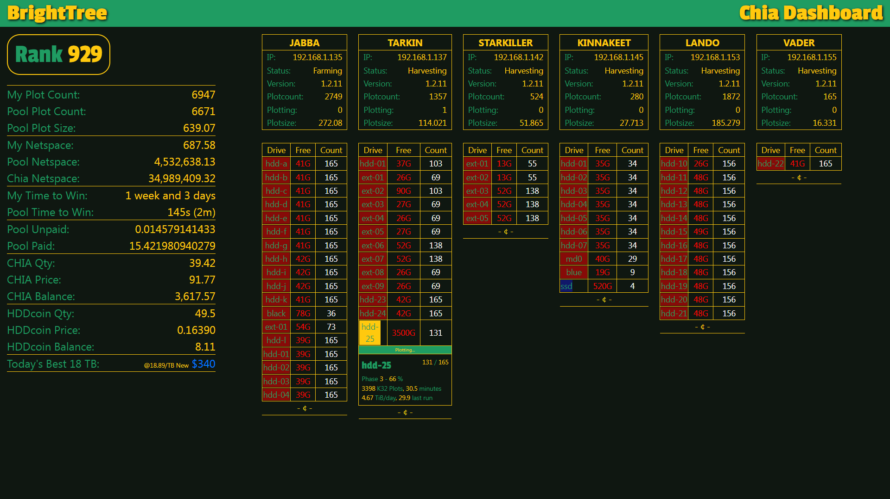
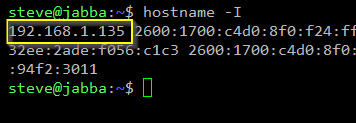
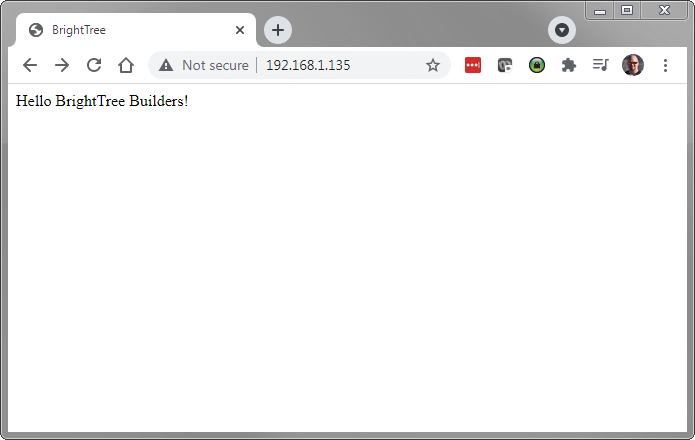
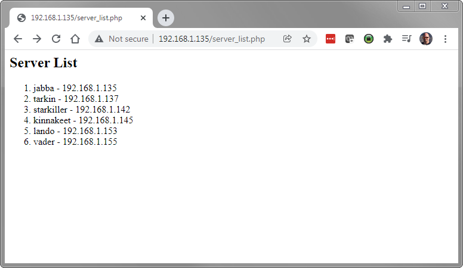

Building a Chia Dashboard on Linux - A Walkthrough

I got started with Chia back in early April 2020. While I was familar with Linux, I wasn't a daily user and didn't know Bash that well. Over the months since then,
I've slowly put together a series of Bash scripts that are basically the backend for a PHP dashboard application for Chia. This post will walk through the steps to build
your own on Linux from scratch.
Note: I built this dashbaord for my farm and as a learning experience for Linux & Bash. All my plots are in one NFT and I am in
Space Pool. I am also co-farming the fork HHDcoin. You may need to make
adjust for your configuration.
Warning: This Walkthrough is long. Very long. But I think it's fun, hopefully you will too. Even if you don't build the dashboard, you may find it interesting to browse
some of the code.
Assumptions before we begin:
- Chia is installed on a Linux machine and it is running the farmer (this is important because if it is just a harvester then a lot of the Chia commands won't work).
- You are willing to setup Apache, MySQL, PHP, ssmtp, and code in both Bash and PHP.
- To keep it as simple as possible, Apache, MySQL, and PHP will be setup on the one farmer server. You can set them up on different machines, this was my original
method.
- You are familiar with Terminal and some form of editor. Other than viewing the dashboard in a web browser, I pretty much do all the work in the Terminal. I use the
editor nano but you can use anything you like, just replace nano with whatever tool you're using.
Software packages we will use:
curl
ssmtp
xfsprogs
mpack
jq
xargs
tr
html2text
apache
php
mysql
Software packages I found useful:
glances
openssh
sharutils
screen
BrightTree - To make it easier to follow along we are going to name our dashboard "brighttree". You can change it to whatever you want but be sure to
replace any instances of "brighttree" in the code with your selected name.
---
# CREATE PROJECT FOLDER
I like to have a directory for source code in my user directory, and then directory under that for the dashboard code.
Let's create a directory for the source code.
```
cd ~
sudo mkdir code
```
And now the dashboard directory.
```
cd code
sudo mkdir brighttree
```
---
# INSTALLING SOFTWARE
## Installing needed software packages
You will need to provider you sudo password to complete these steps. And each one may take a few moments to install.
```
sudo apt install curl
sudo apt install ssmtp
sudo apt-get install xfsprogs
sudo apt install mpack
sudo apt install jq
sudo apt install xargs
sudo apt install tr
sudo apt install html2text
```
## Setting up **ssmtp** (using a Gmail account) ##
Since I have 2-factor authentication turned on for Gmail in order to get my Gmail account setup in ssmtp I had to setup an App Password. Below is a link to Google on how to do that, but I also listed the steps out. You will need to securely save that App Password. I will use "***<app_password>***" as a placeholder in the code, you need to replace that with your actual App Password.
Also, email isn't required so you can skip this step if you aren't comfortable with an App Password.
Reference: <https://support.google.com/mail/answer/185833>
1. Goto your Google Account: <https://myaccount.google.com/>.
2. Select Security.
3. Under "Signing in to Google," select App Passwords. You may need to sign in. If you don’t have this option, it might be because:
* 2-Step Verification is not set up for your account.
* 2-Step Verification is only set up for security keys.
* Your account is through work, school, or other organization.
* You turned on Advanced Protection.
4. At the bottom, choose Select app and choose the app you using and then Select device and choose the device you’re using and then Generate.
5. Follow the instructions to enter the App Password. The App Password is the 16-character code in the yellow bar on your device.
6. Tap Done.
Now let's exit the ssmtp configuration file and add your Gmail details:
```
sudo nano /etc/ssmtp/ssmtp.conf
```
Change the **root** to your email address:
```
root=username@gmail.com
```
Change the **mailhub** to Gmail:
```
mailhub=smtp.gmail.com:465
```
Change the **hostname** to your computer (I'm using jabba because that is my farmering rigs name):
```
hostname=jabba
```
Finally, add the bottom of the configuration file, add the following lines:
```
AuthUser=username@gmail.com
AuthPass=<app_password>
UseTLS=YES
```
Let's send a test email a make sure it works. Replace *username@gmail.com* with your email address.
```
printf "Subject: Testing SMTP Email\n\nThis is a test email." | /usr/sbin/ssmtp username@gmail.com
```
You should have received an email in your Gmail inbox.
---
## Installing & Configuring Apache ##
Apache requires the most configuration, here is a link to Apache's [instructions](https://ubuntu.com/tutorials/install-and-configure-apache#1-overview). I'm basically going to walk you through them.
```
sudo apt update
sudo apt install apache2
```
Now to create a site for BrightTree. First we'll create a new directory for our site in /var/www/ and then a public_html directory under that.
```
sudo mkdir /var/www/brighttree/
cd /var/www/brighttree/
sudo mkdir public_html
cd public_html
```
Let's create our first page for the site.
```
sudo nano index.php
```
Paste to enter the following code into the new 'index.php' file:
```
<?php
// BrightTree Dashboard
?>
<!doctype html>
<html lang="en">
<head>
<meta charset="utf-8">
<meta name="viewport" content="width=device-width, initial-scale=1, shrink-to-fit=no">
<meta http-equiv='refresh' content='15'>
<link rel='icon' type='image/x-icon' href='favicon.png'>
<title>BrightTree</title>
</head>
<body>
Hello BrightTree Builders!
</body>
</html>
```
Save and exit.
Now to setup the Virtual Host Configuration.
Browse to the configuration directory:
```
cd /etc/apache2/sites-available/
```
Let's make a copy of the default to use for our site:
```
sudo cp 000-default.conf brighttree.conf
```
Before we continue on, we are going to need your IP Address. If you need to find out your IP Address you can run the following command:
```
hostname -I
```
The IP address should be the first set of numbers. Make note of it, we'll use that in a minute.

And now we can edit the file:
```
sudo nano brighttree.conf
```
Update ServerAdmin with your email address so Apache can email you errors if they occur:
```
ServerAdmin username@gmail.com
```
Change the DocumentRoot to our directory for the site.
```
DocumentRoot /var/www/brighttree/
```
Since this dashboard is designed to be ran on your own local network we are just going to enter the IP Address of this machine as the **ServerName**.
```
ServerName 192.168.1.135
```
Update both the ErrorLog and CustomLog entries and put 'brighttree' into the file names:
```
ErrorLog ${APACHE_LOG_DIR}/brighttree-error.log
CustomLog ${APACHE_LOG_DIR}/brighttree-access.log combined
```
So you should have something looking like this (ignoring the comments):
```
<VirtualHost *:80>
ServerAdmin username@gmail.com
ServerName 192.168.1.135
DocumentRoot /var/www/brighttree/public_html
ErrorLog ${APACHE_LOG_DIR}/brighttree-error.log
CustomLog ${APACHE_LOG_DIR}/brighttree-access.log combined
</VirtualHost>
```
Save and exit.
Now we are ready to activate our site.
```
sudo a2ensite brighttree.conf
```
Finally we need to reload Apache to put our changes into affect.
```
systemctl reload apache2
```
Before we can load **http://192.168.1.135/** into a web browser and see our page we need to install PHP so Apache can translate our PHP code.
## Installing PHP
You can run the two commands below to install PHP and then restart Apache so it sees the new PHP module.
```
sudo apt install php libapache2-mod-php
```
And we need to load some extension for MySQL and PDO:
```
sudo apt install php7.4-mysql
```
And then a restart
```
sudo systemctl restart apache2
```
Now we can load **http://192.168.1.135/** into a web browser and see our page.

---
# DATABASE SETUP
## Installing MySQL
```
sudo apt update
sudo apt install mysql-server
sudo mysql_secure_installation
```
The security wizard will run. I chose "Yes" to set up a password, and require strong validation (option 2). The rest of the questions I answered "Yes".
```
Remove anonymous users? (Press y|Y for Yes, any other key for No): y
Disallow root login remotely? (Press y|Y for Yes, any other key for No): y
Remove test database and access to it? (Press y|Y for Yes, any other key for No): y
```
Now to test we can launch **mysql** (and then exit)
```
sudo mysql
mysql> exit
```
Now let's create the database and a user & password, then set permissions.
Note: this user/password will be differnt from the password we assigned to root for MySQL. I chose the username as 'builder' but you can make it anything you want.
```
sudo mysql
mysql> CREATE DATABASE brighttree;
mysql> CREATE USER 'builder'@'%' IDENTIFIED WITH mysql_native_password BY 'user_password';
mysql> GRANT ALL ON brighttree.* TO 'builder'@'%';
mysql> exit
```
If you didn't already, let's exit out so we can log in with our builder user. You will be required to enter the password for builder during login.
```
mysql -u builder -p
```
And to test that our database was create, use the show command:
```
mysql> show databases;
```
You should see:
```
+--------------------+
| Database |
+--------------------+
| brighttree |
| information_schema |
+--------------------+
2 rows in set (0.00 sec)
```
Now we need to use our new database.
```
mysql> use brighttree;
```
---
Create Servers table (at the *mysql>* prompt).
```
CREATE TABLE `servers` (
`id` int(11) NOT NULL,
`name` varchar(50) NOT NULL,
`ip` varchar(15) NOT NULL,
`plots` int(11) NOT NULL,
`creating` int(11) NOT NULL,
`size` double NOT NULL,
`capacity` double NOT NULL,
`status` varchar(50) DEFAULT NULL,
`version` varchar(20) NOT NULL,
`pstatus` varchar(250) NOT NULL,
`pooled` int(11) NOT NULL,
`drives` text NOT NULL,
`plotreport` text NOT NULL,
`currentplotdrive` varchar(50) NOT NULL
) ENGINE=InnoDB DEFAULT CHARSET=utf8mb4;
ALTER TABLE `servers`
ADD PRIMARY KEY (`id`),
ADD UNIQUE KEY `server_name` (`name`);
ALTER TABLE `servers`
MODIFY `id` int(11) NOT NULL AUTO_INCREMENT, AUTO_INCREMENT=9;
COMMIT;
```
Check the stucture by viewing the schema. We want to make sure the 'id' is a Primary Key and Auto Increments. 'name' should also be Unique.
```
mysql> describe servers;
```
And you should see the following:
```
+------------------+--------------+------+-----+---------+----------------+
| Field | Type | Null | Key | Default | Extra |
+------------------+--------------+------+-----+---------+----------------+
| id | int | NO | PRI | NULL | auto_increment |
| name | varchar(50) | NO | UNI | NULL | |
| ip | varchar(15) | NO | | NULL | |
| plots | int | NO | | NULL | |
| creating | int | NO | | NULL | |
| size | double | NO | | NULL | |
| capacity | double | NO | | NULL | |
| status | varchar(50) | YES | | NULL | |
| version | varchar(20) | NO | | NULL | |
| pstatus | varchar(250) | NO | | NULL | |
| pooled | int | NO | | NULL | |
| drives | text | NO | | NULL | |
| plotreport | text | NO | | NULL | |
| currentplotdrive | varchar(50) | NO | | NULL | |
+------------------+--------------+------+-----+---------+----------------+
14 rows in set (0.00 sec)
```
---
Create Dictionary table (at the *mysql>* prompt).
```
CREATE TABLE `dictionary` (
`id` int(11) NOT NULL,
`name` varchar(50) NOT NULL,
`value` varchar(150) NOT NULL
) ENGINE=InnoDB DEFAULT CHARSET=utf8mb4;
ALTER TABLE `dictionary`
ADD PRIMARY KEY (`id`);
ALTER TABLE `dictionary`
MODIFY `id` int(11) NOT NULL AUTO_INCREMENT, AUTO_INCREMENT=38;
COMMIT;
```
And checking the schema with the describe command should look like this:
```
mysql> describe dictionary;
+-------+--------------+------+-----+---------+----------------+
| Field | Type | Null | Key | Default | Extra |
+-------+--------------+------+-----+---------+----------------+
| id | int | NO | PRI | NULL | auto_increment |
| name | varchar(50) | NO | | NULL | |
| value | varchar(150) | NO | | NULL | |
+-------+--------------+------+-----+---------+----------------+
3 rows in set (0.00 sec)
```
---
Create Actions table (at the *mysql>* prompt).
```
CREATE TABLE `actions` (
`id` int(11) NOT NULL,
`submitdate` timestamp NOT NULL DEFAULT current_timestamp(),
`action` varchar(20) NOT NULL,
`server` varchar(30) NOT NULL,
`itemid` varchar(30) NOT NULL
) ENGINE=InnoDB DEFAULT CHARSET=utf8mb4;
ALTER TABLE `actions`
MODIFY `id` int(11) NOT NULL AUTO_INCREMENT, AUTO_INCREMENT=821;
COMMIT;
```
And checking the schema again:
```
mysql> describe actions;
+------------+-------------+------+-----+-------------------+-------------------+
| Field | Type | Null | Key | Default | Extra |
+------------+-------------+------+-----+-------------------+-------------------+
| id | int | NO | | NULL | |
| submitdate | timestamp | NO | | CURRENT_TIMESTAMP | DEFAULT_GENERATED |
| action | varchar(20) | NO | | NULL | |
| server | varchar(30) | NO | | NULL | |
| itemid | varchar(30) | NO | | NULL | |
+------------+-------------+------+-----+-------------------+-------------------+
5 rows in set (0.01 sec)
```
---
Now let's insert some data into the tables. We be adding some default values to some fields just as placeholders until we get the Bash scripts setup to pull data from Chia to insert into the db. I'm going to have an INSERT for each of the machines I have. One farmer and five harvesters so a total of 6 inserts. You can add as many (or as few) as you need.
```
INSERT INTO `servers` (`id`, `name`, `ip`, `plots`, `creating`, `size`, `capacity`, `status`, `version`, `pstatus`, `pooled`, `drives`, `plotreport`, `currentplotdrive`) VALUES (1, 'jabba', '192.168.1.135', 2749, 0, 272.08, 300, 'Farming', '1.2.11', '--:--:--:--<br>1246:2938.4:2.91:4756.55', 2749, 'hdd-a___41G', 'hdd-a:0', 'hdd-01');
INSERT INTO `servers` (`id`, `name`, `ip`, `plots`, `creating`, `size`, `capacity`, `status`, `version`, `pstatus`, `pooled`, `drives`, `plotreport`, `currentplotdrive`) VALUES (4, 'tarkin', '192.168.1.137', 1152, 1, 114.021, 104, 'Harvesting', '1.2.11', '2:91:165:43:hdd-24<br>3193:1832.8:4.67:1791.3', 1061, '|ssd-ta__1.6T', 'hdd-01:0', 'hdd-24');
INSERT INTO `servers` (`id`, `name`, `ip`, `plots`, `creating`, `size`, `capacity`, `status`, `version`, `pstatus`, `pooled`, `drives`, `plotreport`, `currentplotdrive`) VALUES (5, 'starkiller', '192.168.1.142', 524, 0, 51.865, 60, 'Harvesting', '1.2.11', '--:--:--:--<br>790:3166.9:2.70:', 524, '|ext-04___52G', 'ext-01:0', 'ssd2');
INSERT INTO `servers` (`id`, `name`, `ip`, `plots`, `creating`, `size`, `capacity`, `status`, `version`, `pstatus`, `pooled`, `drives`, `plotreport`, `currentplotdrive`) VALUES (6, 'kinnakeet', '192.168.1.145', 280, 0, 27.713, 32.2, 'Harvesting', '1.2.11', '--:--:--:--<br>297:8306.9:1.03:8818.87', 280, '|md0______40G', 'hdd-01:0', 'ssd');
INSERT INTO `servers` (`id`, `name`, `ip`, `plots`, `creating`, `size`, `capacity`, `status`, `version`, `pstatus`, `pooled`, `drives`, `plotreport`, `currentplotdrive`) VALUES (7, 'lando', '192.168.1.153', 1872, 0, 185.279, 216, 'Harvesting', '1.2.11', '--:--:--:--<br>0:0.0:0.00:', 1872, '|hdd-18___48G', 'hdd-10:0', '');
INSERT INTO `servers` (`id`, `name`, `ip`, `plots`, `creating`, `size`, `capacity`, `status`, `version`, `pstatus`, `pooled`, `drives`, `plotreport`, `currentplotdrive`) VALUES (8, 'vader', '192.168.1.155', 165, 0, 16.331, 18, 'Harvesting', '1.2.11', '--:--:--:--<br>0:0.0:0.00:', 165, '|hdd-22___41G|', 'hdd-22:0~hdd-22:165', '');
```
Don't worry about what all the values mean yet, we will get into that soon.
And now lets query a table to view the contents:
```
mysql> select * from servers;
```
As long as you see *6 rows in set* you should be good to continue on.
---
For the dictionary table the Bash scripts are going to expect some records to exist already so we will insert a bunch of rows with names but empty values. Then the Bash scripts will fill in the data for us.
```
INSERT INTO `dictionary` (`id`, `name`, `value`) VALUES (1, 'netspace', '35.013');
INSERT INTO `dictionary` (`id`, `name`, `value`) VALUES (2, 'wallet', '37.732205990814');
INSERT INTO `dictionary` (`id`, `name`, `value`) VALUES (3, 'price', '104.60');
INSERT INTO `dictionary` (`id`, `name`, `value`) VALUES (4, 'pool-rank', '884');
INSERT INTO `dictionary` (`id`, `name`, `value`) VALUES (5, 'pool-unpaid', '0.169873598092');
INSERT INTO `dictionary` (`id`, `name`, `value`) VALUES (6, 'pool-paid', '14.232179949942');
INSERT INTO `dictionary` (`id`, `name`, `value`) VALUES (7, 'pool-plotsize', '691.9597513434248');
INSERT INTO `dictionary` (`id`, `name`, `value`) VALUES (8, 'pool-plotcount', '6983');
INSERT INTO `dictionary` (`id`, `name`, `value`) VALUES (9, 'spacepool-netspace', '4761763.344075415');
INSERT INTO `dictionary` (`id`, `name`, `value`) VALUES (10, 'spacepool-time-to-win', '143.77214108890843');
INSERT INTO `dictionary` (`id`, `name`, `value`) VALUES (11, 'chia-netspace', '36512475.27127483');
INSERT INTO `dictionary` (`id`, `name`, `value`) VALUES (12, 'hddcoin-price', '0.16390');
INSERT INTO `dictionary` (`id`, `name`, `value`) VALUES (13, 'hddcoin-wallet', '49.5');
INSERT INTO `dictionary` (`id`, `name`, `value`) VALUES (14, 'chia-ttw', '1_week_and_4_days');
INSERT INTO `dictionary` (`id`, `name`, `value`) VALUES (15, 'my-plotcount', '6708');
INSERT INTO `dictionary` (`id`, `name`, `value`) VALUES (16, 'my-netspace', '663.924');
INSERT INTO `dictionary` (`id`, `name`, `value`) VALUES (17, 'diskprice', '@0.018,,,,,,,@18.36,,,,,,,@330,,,18,TB,,,,2,years,,External,,,,HDD,,,,,,,,Used,,,,,,WD_18TB_Elements_Desktop_Hard_Drive_HDD,_USB_3.0,_Compatible_with_');
```
You can again view the table contents to verify our insert worked:
```
mysql> select * from dictionary;
```
You should see *17 rows in set*. You can 'exit' mysql.
```
mysql> exit
```
---
# THE API #
Our next steps will be building the API for the dashboard so we can make calls from Bash to update the db. I use the term API loosely because it is more of a list of functions we use in the index page.
## .htaccess file
First we are going to create the .htaccess file. We will create this in our main site folder:
```
cd /var/www/brighttree/public_html
sudo nano .htaccess
```
And then copy/paste this code in to the file.
```
# Turn on the rewriting engine
RewriteEngine On
# This will allow us to use a nicer URL to call the API. This rewrite rule will parse
# the URL into a request (or action), name, and value. Then create the GET URL for our
# dashboard. We use this rule for setting the value of a column in the database.
# A typical call will look like this:
# https://192.168.1.135/brighttree/api/request/name/value
#
# Real example: https://192.168.1.135/brighttree/api/setwallet/wallet/2.0
#
RewriteRule ^(.*)/(.*)/(.*)/(.*)$ $1.php?req=$2&name=$3&val=$4 [NC,L]
# This rewrite rule is very similar but will just take a request and a name. We use
# this rule to get a value from the database.
RewriteRule ^(.*)/(.*)/(.*)$ $1.php?req=$2&name=$3
```
---
## dbconfig.php
```
sudo nano dbconfig.php
```
You will need to modify the entries to reflect your configuration.
```
<?php
DEFINE("HOST","192.168.1.135");
DEFINE("DB","brighttree");
DEFINE("USER","builder");
DEFINE("PASSWORD","builder_password");
?>
```
Save and exit.
---
## Testing PHP connection to MySQL
The next file it just to test that our connection is working.
```
sudo nano server_list.php
```
Just copy/paste the code below which will pull in our dbconfig, create a PDO connection and the query for a list of servers.
```
<?php
require "dbconfig.php";
$table = "servers";
try {
$db = new PDO("mysql:host=" . HOST . ";dbname=" . DB, USER, PASSWORD);
echo "<h2>Server List</h2><ol>";
foreach($db->query("SELECT name,ip FROM $table") as $row) {
echo "<li>" . $row['name'] . " - " . $row['ip'] . "</li>";
}
echo "</ol>";
} catch (PDOException $e) {
print "Error!: " . $e->getMessage() . "<br/>";
die();
}
```
Save and exit.
Then you can load http://192.168.1.135/server_list.php to see if it is working. You should see a list of servers like this.

We won't be needing this server_list page anymore so you can delete it if you want to keep the project directory clean.
```
sudo rm server_list.php
```
---
## api.php file
Now we can build the PHP api file. If you aren't already in the site directory you'll need to change to that location. Then we will create a new file.
```
cd /var/www/brighttree/public_html
```
And create a new file.
```
sudo nano api.php
```
**Choose your own Adventure:** you can download the full code **LINK_HERE** or you can follow along and we'll build it as we go. If you download the file and save it to the */var/www/brighttree/public_html* folder, then you can skip down to the next Section titled "Build the Bash scripts".
If your still here reading, then we'll start the code by adding in our php start and end tags, pull in the dbconfig file and set some variables GET parameters in the URL.
```
<?php
require "dbconfig.php"
$name = "";
$req = "";
$val = 0;
// END OF FILE
?>
```
Now let's add some code to handle the GET parameters. Start below setting the $val variable and before the //END OF FILE comment.
```
$name = "";
$req = "";
$val = 0;
if(!empty($_GET['name']) && !empty($_GET['req']))
{
$req = $_GET['req'];
$name = $_GET['name'];
if(!empty($_GET['val']))
{
$val = $_GET['val'];
}
// HANDLE REQUEST
}
else
{
// the URL didn't have the needed GET parameters. Send Invalid Request back.
response(400, "Invalid Request", NULL);
echo "\nName: $name\n";
}
// END MAIN
// END OF FILE
```
We need to handle the request sent in. For each case we are going to call one of the functions we'll define later and send that response back. Insert just below the // HANDLE REQUEST comment.
```
// HANDLE REQUEST
switch(strtolower($req))
{
// GETS
case "totalplots":
send_response(get_total_plots());
break;
case "plotcount":
send_response(get_plot_count($name));
break;
case "poolcount":
send_response(get_pool_count($name));
break;
case "plotsize":
send_response(get_plot_size($name));
break;
case "getstatus":
send_response(get_status($name));
break;
case "getplotting":
send_response(get_plotting($name));
break;
case "getpstatus":
send_response(get_pstatus($name));
break;
case "getppercent":
send_response(get_ppercent($name));
break;
case "getpoolurl":
send_response(get_pool_url($name));
break;
case "getpooldiff":
send_response(get_pool_difficulty($name));
break;
case "getpoolpts":
send_response(get_pool_points($name));
break;
case "getpoolrank":
send_response(get_pool_rank($name));
break;
case "getaction":
send_response(get_action($name));
break;
// SETS
case "setsize":
$result = ($val != "") ? set_size($name,$val) : "Error, no changes made.";
redirect();
break;
case "setstatus":
$result = ($val != "") ? set_status($name,$val) : "Error, no changes made.";
redirect();
break;
case "setpstatus":
$result = ($val != "") ? set_plotting_status($name,$val) : "Error, no changes made.";
redirect();
break;
case "setversion":
$result = ($val != "") ? set_version($name,$val) : "Error, no changes made.";
redirect();
break;
case "setcount":
$result = ($val >= 0) ? set_plot_count($name,$val) : "Error, no changes made.";
redirect();
break;
case "setpooled":
$result = ($val >= 0) ? set_pool_count($name,$val) : "Error, no changes made.";
redirect();
break;
case "setcreating":
$result = ($val >= 0) ? set_creating($name,$val) : "Error, no changes made.";
redirect();
break;
case "addcapacity":
$result = ($val >= 0) ? add_capacity($name,$val) : "Error, no changes made.";
redirect();
break;
case "setdrives":
$result = ($val != "") ? set_drives($name,$val) : "Error, no changes made.";
redirect();
break;
case "setplotreport":
$result = ($val != "") ? set_plotreport($name,$val) : "Error, no changes made.";
redirect();
break;
case "setcurplotdrive":
$result = ($val != "") ? set_current_plot_drive($name,$val) : "Error, no changes made.";
redirect();
break;
case "setnetspace":
$result = ($val >= 0) ? set_dictionary_value($name,$val) : "Error, no changes made.";
redirect();
break;
case "setwallet":
$result = ($val >= 0) ? set_dictionary_value($name,$val) : "Error, no changes made.";
redirect();
break;
case "setprice":
$result = ($val != "") ? set_dictionary_value($name,$val) : "Error, no changes made.";
redirect();
break;
case "setpoolrank":
$result = ($val >= 0) ? set_dictionary_value($name,$val) : "Error, no changes made.";
redirect();
break;
case "setpoolurl":
$result = ($val != "") ? set_dictionary_value($name,$val) : "Error, no changes made.";
redirect();
break;
case "setpoolpts":
$result = ($val >= 0) ? set_dictionary_value($name,$val) : "Error, no changes made.";
redirect();
break;
case "setpooldiff":
$result = ($val >= 0) ? set_dictionary_value($name,$val) : "Error, no changes made.";
redirect();
break;
case "setpoolunpaid":
$result = ($val >= 0) ? set_dictionary_value($name,$val) : "Error, no changes made.";
redirect();
break;
case "setpoolpaid":
$result = ($val >= 0) ? set_dictionary_value($name,$val) : "Error, no changes made.";
redirect();
break;
case "setpoolblocks":
$result = ($val >= 0) ? set_dictionary_value($name,$val) : "Error, no changes made.";
redirect();
break;
case "setpoolplotsize":
$result = ($val >= 0) ? set_dictionary_value($name,$val) : "Error, no changes made.";
redirect();
break;
case "setpoolplotcount":
$result = ($val >= 0) ? set_dictionary_value($name,$val) : "Error, no changes made.";
redirect();
break;
case "setpoolpendpoints":
$result = ($val >= 0) ? set_dictionary_value($name,$val) : "Error, no changes made.";
redirect();
break;
case "setpoolacctname":
$result = ($val != "") ? set_dictionary_value($name,$val) : "Error, no changes made.";
redirect();
break;
case "setpoolglobalpendpoints":
$result = ($val >= 0) ? set_dictionary_value($name,$val) : "Error, no changes made.";
redirect();
break;
case "setpooljoindate":
$result = ($val != "") ? set_dictionary_value($name,$val) : "Error, no changes made.";
redirect();
break;
case "setchianetspace":
$result = ($val >= 0) ? set_dictionary_value($name,$val) : "Error, no changes made.";
redirect();
break;
case "setspacepoolnetspace":
$result = ($val >= 0) ? set_dictionary_value($name,$val) : "Error, no changes made.";
redirect();
break;
case "setspacepoolnanetspace":
$result = ($val >= 0) ? set_dictionary_value($name,$val) : "Error, no changes made.";
redirect();
break;
case "setspacepooleunetspace":
$result = ($val >= 0) ? set_dictionary_value($name,$val) : "Error, no changes made.";
redirect();
break;
case "setspacepoolasianetspace":
$result = ($val >= 0) ? set_dictionary_value($name,$val) : "Error, no changes made.";
redirect();
break;
case "setspacepoolpoolreward":
$result = ($val >= 0) ? set_dictionary_value($name,$val) : "Error, no changes made.";
redirect();
break;
case "setspacepoolfarmerreward":
$result = ($val >= 0) ? set_dictionary_value($name,$val) : "Error, no changes made.";
redirect();
break;
case "setspacepooltotalfarms":
$result = ($val >= 0) ? set_dictionary_value($name,$val) : "Error, no changes made.";
redirect();
break;
case "setspacepooltimetowin":
$result = ($val >= 0) ? set_dictionary_value($name,$val) : "Error, no changes made.";
redirect();
break;
case "setspacepoolminimumpayout":
$result = ($val >= 0) ? set_dictionary_value($name,$val) : "Error, no changes made.";
redirect();
break;
case "setspacepoolglobalpendingpoints":
$result = ($val >= 0) ? set_dictionary_value($name,$val) : "Error, no changes made.";
redirect();
break;
case "setdiskprice":
$result = ($val != "") ? set_dictionary_value($name,$val) : "Error, no changes made.";
redirect();
break;
case "sethddcoinprice":
$result = ($val != "") ? set_dictionary_value($name,$val) : "Error, no changes made.";
redirect();
break;
case "sethddcoinwallet":
$result = ($val != "") ? set_dictionary_value($name,$val) : "Error, no changes made.";
redirect();
break;
case "setchiattw":
$result = ($val != "") ? set_dictionary_value($name,$val) : "Error, no changes made.";
redirect();
break;
case "setmyplotcount":
$result = ($val != "") ? set_dictionary_value($name,$val) : "Error, no changes made.";
redirect();
break;
case "setmynetspace":
$result = ($val != "") ? set_dictionary_value($name,$val) : "Error, no changes made.";
redirect();
break;
case "setfarmsummary":
$result = ($val != "") ? set_dictionary_value($name,$val) : "Error, no changes made.";
redirect();
break;
// OTHERS
case "addplot":
$result=add_plot($name);
redirect();
break;
case "subplot":
$result=sub_plot($name);
redirect();
break;
case "actiondone":
$result=action_done($name);
redirect();
break;
}
```
That is a long one, but you can just copy/paste it in. It doesn't require a lot of explanation each request is calling a function and then redirects back to the site.
Now we will continue down below the // END MAIN comment and just above the // END OF FILE comment. We will define and code each of the functions from above.
First is the redirect function which just send the user back to the site.
```
// END MAIN
function redirect()
{
header('Location: http://192.168.1.135/');
}
```
Next up is the send_response function. I believe between the redirect and send_response function is there a logic bug, but since the dashboard is working for me currently I am putting it in as is and I will try to refactor the code later.
```
function send_response($result)
{
if(empty($result))
{
response(200, "Server Not Found", NULL);
}
else
{
response(200, "Server Found", $result); //Uncomment when you need to debug.
}
}
```
And the response function takes the value to send back and encodes it in JSON before sending.
```
function response($status,$status_message,$data)
{
header("HTTP/1.1 ".$status);
$response['status']=$status;
$response['status_message']=$status_message;
$response['data']=$data;
$json_response = json_encode($response);
echo $json_response;
}
// END OF FILE
```
Save and exit.
---
## data.php
The rest of the needed api functions will be coded in the _data.php_ file and are for interactions with the database. I'm not going to explain each one because I think I named them pretty well and I hoping it is obvious what each does. So you can probably copy/paste the next big blob in to the file.
First make sure you are in the site directory and let's create the file.
```
cd /var/www/brighttree/public_html
nano data.php
```
And then here is the file listing.
```
<?php
function get_action($name)
{
$link = mysqli_connect(HOST, USER, PASSWORD, DB);
mysqli_set_charset($link, 'utf8');
$sql = "select id,action,server,itemid,submitdate from actions where server='$name' order by submitdate limit 1;";
$actions = mysqli_query($link,$sql);
if(!$actions)
{
http_response_code(404);
exit(1);
}
$actarr = array();
while($row = mysqli_fetch_assoc($actions))
{
$actarr[] = $row;
}
return $actarr;
mysqli_close($link);
}
function get_total_plots()
{
$link = mysqli_connect(HOST, USER, PASSWORD, DB);
mysqli_set_charset($link, 'utf8');
$sql = "select sum(plots) as total_plots from servers;";
$servers = mysqli_query($link,$sql);
if(!$servers)
{
http_response_code(404);
exit(1);
}
foreach($servers as $server=>$plot_count)
{
return $plot_count;
break;
}
mysqli_close($link);
}
function get_plot_count($name)
{
$link = mysqli_connect(HOST, USER, PASSWORD, DB);
mysqli_set_charset($link, 'utf8');
$sql = "select name, plots from servers where name='$name';";
$servers = mysqli_query($link,$sql);
if(!$servers)
{
http_response_code(404);
exit(1);
}
foreach($servers as $server=>$plot_count)
{
if($server==$name)
{
return $plot_count;
break;
}
}
mysqli_close($link);
}
function get_pool_count($name)
{
$link = mysqli_connect(HOST, USER, PASSWORD, DB);
mysqli_set_charset($link, 'utf8');
$sql = "select name, pooled from servers where name='$name';";
$servers = mysqli_query($link,$sql);
if(!$servers)
{
http_response_code(404);
exit(1);
}
foreach($servers as $server=>$pool_count)
{
if($server==$name)
{
return $pool_count;
break;
}
}
mysqli_close($link);
}
function get_status($name)
{
$link = mysqli_connect(HOST, USER, PASSWORD, DB);
mysqli_set_charset($link, 'utf8');
$sql = "select name, status from servers where name='$name';";
$servers = mysqli_query($link,$sql);
if(!$servers)
{
http_response_code(404);
exit(1);
}
foreach($servers as $server=>$status)
{
if($server==$name)
{
return $status;
break;
}
}
mysqli_close($link);
}
function get_pstatus($name)
{
$link = mysqli_connect(HOST, USER, PASSWORD, DB);
mysqli_set_charset($link, 'utf8');
$sql = "select name, pstatus from servers where name='$name';";
$servers = mysqli_query($link,$sql);
if(!$servers)
{
http_response_code(404);
exit(1);
}
foreach($servers as $server=>$pstatus)
{
if($server==$name)
{
return $pstatus;
break;
}
}
mysqli_close($link);
}
function get_ppercent($name)
{
$link = mysqli_connect(HOST, USER, PASSWORD, DB);
mysqli_set_charset($link, 'utf8');
$sql = "select name, pstatus from servers where name='$name';";
$servers = mysqli_query($link,$sql);
if(!$servers)
{
http_response_code(404);
exit(1);
}
foreach($servers as $server=>$ppercent)
{
$newval = "";
if($server==$name)
{
$per = $ppercent['pstatus'];
$threads = explode(",", substr($per,0,strpos($per,"<br>")));
foreach($threads as $thread)
{
$fields = explode(":", $thread);
if(count($fields) > 3 && $fields[3] != "")
{
if($fields[3] < 10)
{
$newval .= "0" . $fields[3] . "% ";
} else {
$newval .= $fields[3] . "% ";
}
}
elseif ($thread == "--:--:--")
{
$newval .= "--- ";
}
elseif ($fields[0] == 4)
{
$newval .= "(+) "; //99%
}
}
$ppercent['pstatus'] = $newval;
return $ppercent;
break;
}
}
mysqli_close($link);
}
function get_plotting($name)
{
$link = mysqli_connect(HOST, USER, PASSWORD, DB);
mysqli_set_charset($link, 'utf8');
$sql = "select name, creating from servers where name='$name';";
$servers = mysqli_query($link,$sql);
if(!$servers)
{
http_response_code(404);
exit(1);
}
foreach($servers as $server=>$plotting)
{
if($server==$name)
{
return $plotting;
break;
}
}
mysqli_close($link);
}
function set_plot_count($name, $value)
{
$link = mysqli_connect(HOST, USER, PASSWORD, DB);
mysqli_set_charset($link, 'utf8');
$sql = "update servers set plots=$value where name='$name';";
$servers = mysqli_query($link,$sql);
if(!$servers)
{
http_response_code(404);
exit(1);
}
$sql = "select plots from servers where name='$name';";
$servers = mysqli_query($link,$sql);
foreach($servers as $server=>$plot_count)
{
if($server==$name)
{
return $plot_count;
break;
}
}
mysqli_close($link);
}
function set_pool_count($name, $value)
{
$link = mysqli_connect(HOST, USER, PASSWORD, DB);
mysqli_set_charset($link, 'utf8');
$sql = "update servers set pooled=$value where name='$name';";
$servers = mysqli_query($link,$sql);
if(!$servers)
{
http_response_code(404);
exit(1);
}
$sql = "select pooled from servers where name='$name';";
$servers = mysqli_query($link,$sql);
foreach($servers as $server=>$pool_count)
{
if($server==$name)
{
return $pool_count;
break;
}
}
mysqli_close($link);
}
function set_creating($name, $value)
{
$link = mysqli_connect(HOST, USER, PASSWORD, DB);
mysqli_set_charset($link, 'utf8');
$sql = "update servers set creating=" . doubleval($value) . " where name='$name';";
$servers = mysqli_query($link,$sql);
if(!$servers)
{
http_response_code(404);
exit(1);
}
mysqli_close($link);
return $value;
}
function set_drives($name, $value)
{
$link = mysqli_connect(HOST, USER, PASSWORD, DB);
mysqli_set_charset($link, 'utf8');
$sql = "update servers set drives='" . $value . "' where name='$name';";
$servers = mysqli_query($link,$sql);
if(!$servers)
{
http_response_code(404);
exit(1);
}
mysqli_close($link);
return $value;
}
function set_plotreport($name, $value)
{
$link = mysqli_connect(HOST, USER, PASSWORD, DB);
mysqli_set_charset($link, 'utf8');
$sql = "update servers set plotreport='" . $value . "' where name='$name';";
$servers = mysqli_query($link,$sql);
if(!$servers)
{
http_response_code(404);
exit(1);
}
mysqli_close($link);
return $value;
}
function set_current_plot_drive($name, $value)
{
$link = mysqli_connect(HOST, USER, PASSWORD, DB);
mysqli_set_charset($link, 'utf8');
$sql = "update servers set currentplotdrive='" . $value . "' where name='$name';";
$servers = mysqli_query($link,$sql);
if(!$servers)
{
http_response_code(404);
exit(1);
}
mysqli_close($link);
return $value;
}
function get_plot_size($name)
{
$link = mysqli_connect(HOST, USER, PASSWORD, DB);
mysqli_set_charset($link, 'utf8');
$sql = "select name, size from servers where name='$name';";
$servers = mysqli_query($link,$sql);
if(!$servers)
{
http_response_code(404);
exit(1);
}
foreach($servers as $server=>$plot_size)
{
if($server==$name)
{
return $plot_size;
break;
}
}
mysqli_close($link);
}
function add_plot($name)
{
$link = mysqli_connect(HOST, USER, PASSWORD, DB);
$sql = "update servers set plots = plots + 1 where name='$name';";
$servers = mysqli_query($link,$sql);
if(!$servers)
{
http_response_code(404);
exit(1);
}
$sql = "select plots from servers where name='$name';";
$servers = mysqli_query($link,$sql);
foreach($servers as $server=>$plot_count)
{
if($server==$name)
{
return $plot_count;
break;
}
}
$total_plots = get_total_plots();
mysqli_close($link);
}
function sub_plot($name)
{
$link = mysqli_connect(HOST, USER, PASSWORD, DB);
$sql = "update servers set plots = plots - 1 where name='$name';";
$servers = mysqli_query($link,$sql);
if(!$servers)
{
http_response_code(404);
exit(1);
}
$sql = "select plots from servers where name='$name';";
$servers = mysqli_query($link,$sql);
foreach($servers as $server=>$plot_count)
{
if($server==$name)
{
return $plot_count;
break;
}
}
mysqli_close($link);
}
function action_done($id)
{
//DELETE FROM `movies` WHERE `movie_id` = 18;
$link = mysqli_connect(HOST, USER, PASSWORD, DB);
$sql = "delete from actions where id='$id';";
$result = mysqli_query($link,$sql);
}
function set_size($name,$value)
{
$link = mysqli_connect(HOST, USER, PASSWORD, DB);
$sql = "update servers set size = $value where name='$name';";
$servers = mysqli_query($link,$sql);
if(!$servers)
{
http_response_code(404);
exit(1);
}
$sql = "select size from servers where name='$name';";
$servers = mysqli_query($link,$sql);
foreach($servers as $server=>$size)
{
if($server==$name)
{
return $size;
break;
}
}
mysqli_close($link);
}
function add_capacity($name,$value)
{
$link = mysqli_connect(HOST, USER, PASSWORD, DB);
$sql = "update servers set capacity = capacity + $value where name='$name';";
$servers = mysqli_query($link,$sql);
if(!$servers)
{
http_response_code(404);
exit(1);
}
$sql = "select capacity from servers where name='$name';";
$servers = mysqli_query($link,$sql);
foreach($servers as $server=>$capacity)
{
if($server==$name)
{
return $capacity;
break;
}
}
mysqli_close($link);
}
function set_status($name,$value)
{
$link = mysqli_connect(HOST, USER, PASSWORD, DB);
$sql = "update servers set status='$value' where name='$name';";
$servers = mysqli_query($link,$sql);
if(!$servers)
{
http_response_code(404);
exit(1);
}
$sql = "select status from servers where name='$name';";
$servers = mysqli_query($link,$sql);
foreach($servers as $server=>$status)
{
if($server==$name)
{
return $status;
break;
}
}
mysqli_close($link);
}
function set_plotting_status($name,$value)
{
$link = mysqli_connect(HOST, USER, PASSWORD, DB);
$value = urldecode($value);
$sql = "update servers set pstatus='$value' where name='$name';";
$servers = mysqli_query($link,$sql);
if(!$servers)
{
http_response_code(404);
exit(1);
}
$sql = "select pstatus from servers where name='$name';";
$servers = mysqli_query($link,$sql);
foreach($servers as $server=>$status)
{
if($server==$name)
{
return $status;
break;
}
}
mysqli_close($link);
}
function set_version($name,$value)
{
$link = mysqli_connect(HOST, USER, PASSWORD, DB);
$sql = "update servers set version='$value' where name='$name';";
$servers = mysqli_query($link,$sql);
if(!$servers)
{
http_response_code(404);
exit(1);
}
$sql = "select version from servers where name='$name';";
$servers = mysqli_query($link,$sql);
foreach($servers as $server=>$version)
{
if($server==$name)
{
return $version;
break;
}
}
mysqli_close($link);
}
function set_dictionary_value($name,$value)
{
$link = mysqli_connect(HOST, USER, PASSWORD, DB);
$sql = "update dictionary set value='$value' where name='$name';";
$dictionary = mysqli_query($link,$sql);
if(!$dictionary)
{
http_response_code(404);
exit(1);
}
mysqli_close($link);
return $value;
}
?>
```
Save and exit.
---
# Build the Bash scripts - Farmer #
## brighttree.web.sh
brighttree.web.sh is the main Bash script that gathers data and uses curl to insert into the database.
First make sure you are in the project folder.
```
cd ~/code/brighttree
```
**Choose your own Adventure:** you can download the full code **LINK_HERE** or you can follow along and we'll build it as we go. If you download the file and save it to the *~/code/brighttree* folder (and update it with your edits), then you can skip down to the next Section titled "Build the Bash scripts".
**NOTE**: This script is *highly* customized to my specific configuration, including number of drives, drive names, etc. You will need to make many adjustments for your specifc set up. One tool I use a lot that provides a lot of information 'at a glance' is the tool Glances. If you want to install glances:
```
sudo apt install glances
```
And then you can launch it by just typing glances on the command line.
```
glances
```
Now let's create the script. I'll be going through a block at a time, just keep adding the code below any previous code entered. And again you will need to make adjustments for your specific configuration. I will put the label ***CODE BLOCK*** just before each secton that should be added to the script.
```
nano brighttree.web.sh
```
Start with telling the interpreter we want to use Bash.
***CODE BLOCK***
```
#!/bin/bash
# Update the BrightTree website database with values retrieved from Chia
# First parameter calling the script will be the server name and we will use
# access that value with $1.
```
<fieldset style='border:1px solid white;padding-bottom:6px;line-height:16px;'><legend><span style='font-weight:bold;font-size:1.25rem;'><span class="glyphicon glyphicon-info-sign"></span> The More You Know </span></legend>
<p><b><span style='font-size:1.45rem;'>#</span></b> is the comment character for Bash scripts. Other than the first line with <b>'#!'</b> any other line that has a <b>'#'</b> the text following it is treated as a comment and ignored. However, it has become good practice to have comments on their own line and on the same line as commands.</p></fieldset></br>
Now we need to get the Chia python virtual environment going.
***CODE BLOCK***
<pre style='border:1px solid green;color:lightgreen;background-color:#000000;'>
# change to the chia-blockchain directory
cd ~/chia-blockchain
# start the python virtual environment for chia
. ./activate
</pre>
<fieldset style='border:1px solid white;padding-bottom:6px;line-height:16px;'><legend><span style='font-weight:bold;font-size:1.25rem;'> The More You Know </span></legend>
<p><b><span style='font-size:1.45rem;'>~</span></b> is a shortcut to your user directory. We will use this a lot. It is the same thing as <em>/home/username</em></p>
<p><b><span style='font-size:1.45rem;'>.</span></b> is a shortcut for the command <em>source</em>. The source command reads and executes commands from the file specified as its argument in the current shell environment. It is useful to load functions, variables, and configuration files into shell scripts.</p></fieldset></br>
The next block will create a log file and add the current date and the server name into the log.
***CODE BLOCK***
```
echo $(date +"%Y%m%d %T") >~/code/brighttree/.brighttree.log
echo "server = $1" >>~/code/brighttree/.brighttree.log
```
_The More You Know_
---
**$( )** Anything inside the dollar sign parentheses block will be executed immediately and the result returned in it's place. We will use that to execute other commands that we want the result from to use in the current command. In this instance to print with the **echo** command.
---
The next block will get the number of plots currently being created on this computer and post that value into the database with the 'curl' command. I left the first method I used when I was using the Chia plotter, but replaced it with a new method when I switched to using the MadMax plotter.
***CODE BLOCK***
```
# get the number of plots currenting being created on this machine and post to db
# creating=`ps e -C "chia plots create" | grep -c "chia plots create"`
# update creating for MADMAX
creating=`ps e -C "chia_plot" | grep -c "chia_plot"`
echo "creating = $creating" >>~/code/brighttree/.brighttree.log
curl -s http://192.168.1.135/api/setcreating/$1/$creating >>~/code/brighttree/.brighttree.log
```
_The More You Know_
---
**`** When the backtick character is wrapped around commands they are executed and the result brought back in to our script. Just like the **$( )** block. I probably should have been more consistent but I use a mix of both through out the scripts.
---
The next block will get the balance from our wallet, check to see if it has changed and if so...
- Write the new balance to the history file for the next time we need to check.
- Send an email notification. Be sure to update the email address to yours. Or comment the line out by putting a '#' symbol in front of the **"printf"** line.
- Update the wallet balance in our BrightTree database
- Call another Bash script that will do some additional tasks, such as find the transaction and write it to a historical file that we can use to generate a transaction report. We will create the newtrx.sh script after we finish with this one.
***CODE BLOCK***
```
# get wallet balance and check to see if it's different from the last balance. Email if so, also update the db.
bal=`chia wallet show | grep ' .Total Balance:' | cut --fields 6 --delimiter=\ | head -n 1`
echo "bal = $bal" >>~/code/brighttree/.brighttree.log
lastbal=`cat ~/code/brighttree/.walletbalance`
if [ "$bal" != "$lastbal" ]; then
echo $bal >~/code/brighttree/.walletbalance
printf "Subject: New Chia Confirmed Balance: $bal\n\nConfirmed Balance: $bal" | /usr/sbin/ssmtp username@gmail.com
curl -s http://192.168.1.135/brighttree/api/setwallet/wallet/$bal >>~/code/brighttree/.brighttree.log
sh ~/code/brighttree/newtrx.sh
fi
```
The next block will get the pool URL for the pool.
***CODE BLOCK***
```
# get pool info and put into BrightTree DB
url=`chia plotnft show | grep 'Current pool URL' | cut --fields 4 --delimiter=\ `
lasturl=`cat ~/code/brighttree/.poolurl`
echo $url >~/code/brighttree/.poolurl
curl -s http://192.168.1.135/brighttree/api/setpoolurl/$url >>~/code/brighttree/.brighttree.log
```
I am in Space Pool and I only have one NFT, I'm not sure what this will do for multiple NTFs. You may get different results back from Chia that cause the **'grep'** and **'cut'** commands to work unexpectedly. You may want to test this first. Can you join different pools with different NFTs? I don't know. I would expect the following command to return just one line.
**Note**: _you must have a space following the last backslash because our delimiter is an actual space._
```
chia plotnft show | grep 'Current pool URL' | cut --fields 4 --delimiter=\
```
If you get more than one line, you'll need to work out how to handle that. One option is to not bother with adding this to the db. You can make the value blank by setting the 'url' variable equal to a pair of double-quotes. Honestly, I don't even display this information in the dashboard in the current version, so setting to empty or even leaving the code block out would be fine.
```
url=""
```
The next block is specific to my farming server. It gets a count of plots for each drive, totals them up and then puts that value into the databse. I know they are all NFT plots because I only put NFTs into the 'spacepool' subdirectory of the drive. Also worth mentioning that this total plot count isn't even used in the dashboard currently. So again this is another code block that could be left out. I'm leaving several of these in here simply so you can see how I did it. Maybe you'll find the technique useful somewhere else.
Also, I'm sure there is a better way to do this. It grew over time to be fairly large blob of code but it didn't start that way... and I have to update it every time I add/remove a drive.
***CODE BLOCK***
```
# get the count of pool plots and put into BrightTree DB - JABBA
jhdd_a=`find /mnt/hdd-a/spacepool/ -name "*.plot" | wc -l`
jhdd_b=`find /mnt/hdd-b/spacepool/ -name "*.plot" | wc -l`
jhdd_c=`find /mnt/hdd-c/spacepool/ -name "*.plot" | wc -l`
jhdd_d=`find /mnt/hdd-d/spacepool/ -name "*.plot" | wc -l`
jhdd_e=`find /mnt/hdd-e/spacepool/ -name "*.plot" | wc -l`
jhdd_f=`find /mnt/hdd-f/spacepool/ -name "*.plot" | wc -l`
jhdd_g=`find /mnt/hdd-g/spacepool/ -name "*.plot" | wc -l`
jhdd_h=`find /mnt/hdd-h/spacepool/ -name "*.plot" | wc -l`
jhdd_i=`find /mnt/hdd-i/spacepool/ -name "*.plot" | wc -l`
jhdd_j=`find /mnt/hdd-j/spacepool/ -name "*.plot" | wc -l`
jhdd_k=`find /mnt/hdd-k/spacepool/ -name "*.plot" | wc -l`
jhdd_l=`find /mnt/hdd-l/spacepool/ -name "*.plot" | wc -l`
jblack=`find /media/steve/BLACKGATE/CHIA/plots/spacepool/ -name "*.plot" | wc -l`
jext_1=`find /media/steve/ext-01/CHIA/plots/spacepool/ -name "*.plot" | wc -l`
jhdd01=`find /mnt/hdd-01/spacepool/ -name "*.plot" | wc -l`
jhdd02=`find /mnt/hdd-02/spacepool/ -name "*.plot" | wc -l`
jhdd03=`find /mnt/hdd-03/spacepool/ -name "*.plot" | wc -l`
jhdd04=`find /mnt/hdd-04/spacepool/ -name "*.plot" | wc -l`
jssdta=`find /mnt/ssd-ta/spacepool/ -name "*.plot" | wc -l`
j_poolplots=$(($jhdd_a+$jhdd_b+$jhdd_c+$jhdd_d+$jhdd_e+$jhdd_f+$jhdd_g+$jhdd_h+$jhdd_i+$jhdd_j+$jhdd_k+$jhdd_l+$jblack+$jext_1+$jssdta+$jhdd01+$jhdd02+$jhdd03+$jhdd04))
echo "jabba pooled = $j_poolplots" >>~/code/brighttree/.brighttree.log
jabba_lastpool=`cat ~/code/brighttree/.jabbapoolcount`
if [ $j_poolplots -ne $jabba_lastpool ]; then
echo $j_poolplots >~/code/brighttree/.jabbapoolcount
curl -s http://192.168.1.135/brighttree/api/setpooled/jabba/$j_poolplots >>~/sourcecode/brighttree/.brighttree.log
fi
```
The next code block will run a php script that will parse the Chia farm summary and get the plot count and sizes for the farmer and each harvester. This php script replaced the code block above (along with some code that has already been removed) that isn't really used anymore.
Also, I resorted to writing it in php because I'm much more familiar with PHP than Bash and I was having trouble getting the string parsing correct. This is the only instance I gave up on getting it right in Bash and resorted to scripting it in PHP. We will actually write the PHP file later after we finish with the main script 'brighttree.web.sh'.
***CODE BLOCK***
```
# Set plot count and sizes with the php script below
php -f ~/code/brighttree/setplotcounts.php
```
The next code block will get the Chia farm summary and parse it down on data values that we will put into the database. These are structured pretty much the same so they are all in the one code block together.
***CODE BLOCK***
```
# update the db with the my-plotcount from farm summary
totalcount=`chia farm summary | tail -n 5 | head -n 1 | cut --fields 6 --delimiter=\ `
echo "my plotcount = $totalcount" >>~/code/brighttree/.brighttree.log
curl -s http://192.168.1.135/brighttree/api/setmyplotcount/my-plotcount/$totalcount >>~/code/brighttree/.brighttree.log
# update the db with my-netspace from farm summary
totalsize=`chia farm summary | tail -n 4 | head -n 1 | cut --fields 5,6 --delimiter=\ `
echo "my netspace = $totalsize" >>~/code/brighttree/.brighttree.log
curl -s http://192.168.1.135/brighttree/api/setmynetspace/my-netspace/$totalsize >>~/code/brighttree/.brighttree.log
# update the db with the chia status for this server
status=`chia farm summary | grep 'Farming status' | cut --fields 3,4 --delimiter=\ `
echo "status = $status" >>~/code/brighttree/.brighttree.log
curl -s http://192.168.1.135/brighttree/api/setstatus/$1/$status >>~/code/brighttree/.brighttree.log
# update the db with the size of the chia netspace
net=`chia farm summary | grep 'Estimated network space' | cut --fields 4,5 --delimiter=\ `
echo "net = $net" >>~/code/brighttree/.brighttree.log
curl -s http://192.168.1.135/brighttree/api/setnetspace/netspace/$net >>~/code/brighttree/.brighttree.log
# update the db with the ttw for chia
ttw=`chia farm summary | tail -n 2 | head -n 1 | cut --fields 2 --delimiter=: | xargs | tr ' ' '_'`
echo "ttw = $ttw" >>~/code/brighttree/.brighttree.log
curl -s http://192.168.1.135/brighttree/api/setchiattw/chia-ttw/$ttw >>~/code/brighttree/.brighttree.log
# update the db with the install version of chia
ver=`chia version`
curl -s http://192.168.1.135/brighttree/api/setversion/$1/$ver
```
The next block of code will run another Bash script against my plotting script. It returns plotstatus for any current plotting processes. The script uses the log file specified in the MadMaxPlot script. We will write 'runstat.sh' after we finish with this script. Then the code block continues by building up a summary of the running process and then puts that into the database. There is some code commented out becuase it was written for the original Chia plotter and had to be rewrote for MadMax.
***CODE BLOCK***
```
# get the phase of each running process (if possible), send to db
# madmaxplot.sh is my plotting script
pstatus=`bash ~/code/brighttree/runstat.sh ~/madmaxplot.sh $1`
# current run summary, merge with the phase status (this was for the orignal plotter and was replace when I switched to MadMax)
#runsum=`grep -i "total time" ~/chialogs/*.log | awk '{sum=sum+$4} {avg=sum/NR} {tday=86400/avg*8*101.366/1024} END {printf "%d:%0.1f:%0.2f", NR, avg, tday}'`
# MADMAX version for runsum value
# be sure to update the tday formula for the number of concurrent processing creating plots. Originally probably 8 but with MadMax should be 1
lastrun=`cat ~/code/brighttree/.lastplottime`
runsum=`grep -i "Total plot creation time" ~/chialogs/*.log | awk '{sum=sum+$6} {avg=sum/NR} {tday=86400/avg*1*101.366/1024} END {printf "%d:%0.1f:%0.2f", NR, avg, tday}'`
runsum="$runsum:$lastrun"
pstatsum="$pstatus<br>$runsum"
echo "pstatsum = $pstatsum" >>~/code/brighttree/.brighttree.log
# merged phases status and run summary
curl -s http://192.168.1.135/brighttree/api/setpstatus/$1/$pstatsum >>~/code/brighttree/.brighttree.log
```
The next block of code will use the **'df'** command to build up a list of drives and their sizes. Then put that value into the database. $1 is the server name which is passed into this script when it is ran.
***CODE BLOCK***
```
# get drives info and put into BrightTree DB
# need a df statement for each type drive filesystem in use for plots, concat them together with double ampersands
drives=`df -h -t fuseblk --output=target,avail | grep "/" | cut --fields 3 --delimiter=\/ | tr ' ' '_' | tr '\n' '|' && df -h -t exfat --output=target,avail | grep "/" | cut --fields 4 --delimiter=\/ | tr ' ' '_' | tr '\n' '|' && df -h -t ext4 --output=target,avail | grep "/" | cut --fields 3 --delimiter=\/ | tr ' ' '_' | tr '\n' '|'`
curl -s http://192.168.1.135/brighttree/api/setdrives/$1/$drives >>~/code/brighttree/.brighttree.log
echo "drives = $drives" >~/code/brighttree/.drives
```
Note: you may need to do some digging to find out what kind of filesystem your drives have. I used the command below to list out all the drives then made note of the filesystem I'd need and built up the command in the code block.
```
df --output=target,fstype,source
```
I have 3 different types of filesystems in use: fuseblk, exfat, and ext4. That is why you find two **'&&'** in the command. Those to join the result of the three differnt types into one result.
The next block of code will check if there any actions added to the database that need to be performed. I don't use this code anymore since I've completely replotted for NFT. The dashboard used to have columns/counts for each type of type, OG and NFT, and give a clickable button to be able to delete a single OG plot at a time.
This was how I kept my drive pretty much full while still plotting and removing old drives. It wasn't automated I had to watch it, but I have the dashboard open all the time anyway. When the size got low enough, I used to display a warning in the dashboard and I would then click a button on the webpage to delete the oldest plot (in only the OG directory... remember I kept OG and NFT in different folders). I thought the 'action' system might be useful down the road, but I never came up with any other actions to perform beyond deleting old plots. Honestly, this is another code block that really could be left out.
Also, since it is deleting plots on the drives, it is very specific to my set up. If you keep this code block in, you need to make adjustments for your drives & plot locations.
***CODE BLOCK***
```
# check BrightTree DB for any actions
action=`curl -s http://192.168.1.135/brighttree/api/getaction/$1`
action_id=$(echo $action | jq -r '.data[0].id')
action_name=$(echo $action | jq -r '.data[0].action')
action_target=$(echo $action | jq -r '.data[0].itemid')
echo "ACTION: ID=$action_id - NAME=$action_name - TARGET=$action_target" >>~/code/brighttree/.brighttree.log
# dp for delete plot - used this for slowly deleting old OG plots while I was creating new NFT plots
if [ $action_name == "dp" ]; then
case $action_target in
"hdd-a")
rm "$(ls -t /mnt/hdd-a/*.plot | tail -1)"
;;
"hdd-b")
rm "$(ls -t /mnt/hdd-b/*.plot | tail -1)"
;;
"hdd-c")
rm "$(ls -t /mnt/hdd-c/*.plot | tail -1)"
;;
"hdd-d")
rm "$(ls -t /mnt/hdd-d/*.plot | tail -1)"
;;
"hdd-e")
rm "$(ls -t /mnt/hdd-e/*.plot | tail -1)"
;;
"hdd-f")
rm "$(ls -t /mnt/hdd-f/*.plot | tail -1)"
;;
"hdd-g")
rm "$(ls -t /mnt/hdd-g/*.plot | tail -1)"
;;
"hdd-h")
rm "$(ls -t /mnt/hdd-h/*.plot | tail -1)"
;;
"hdd-i")
rm "$(ls -t /mnt/hdd-i/*.plot | tail -1)"
;;
"hdd-j")
rm "$(ls -t /mnt/hdd-j/*.plot | tail -1)"
;;
"hdd-k")
rm "$(ls -t /mnt/hdd-k/*.plot | tail -1)"
;;
"hdd-l")
rm "$(ls -t /mnt/hdd-l/*.plot | tail -1)"
;;
"BLACKGATE")
rm "$(ls -t /media/steve/BLACKGATE/CHIA/plots/*.plot | tail -1)"
;;
"ext-01")
rm "$(ls -t /media/steve/ext-01/CHIA/plots/*.plot | tail -1)"
;;
"hdd-01")
rm "$(ls -t /mnt/hdd-01/*.plot | tail -1)"
;;
"hdd-02")
rm "$(ls -t /mnt/hdd-02/*.plot | tail -1)"
;;
"hdd-03")
rm "$(ls -t /mnt/hdd-03/*.plot | tail -1)"
;;
"hdd-04")
rm "$(ls -t /mnt/hdd-04/*.plot | tail -1)"
;;
"ssd-ta")
rm "$(ls -t /mnt/ssd-ta/*.plot | tail -1)"
;;
esac
curl -s http://192.168.1.135/brighttree/api/actiondone/$action_id
fi
```
The last code block for the **'brighttree.web.sh'** file will stop the python virtual environment and make sure the log file ends with a linefeed (so if you 'cat ./monchia.log' it won't leave your prompt on the same line).
***CODE BLOCK***
```
# stop the python virtual environment for chia
deactivate
echo "" >>~/code/brighttree/.brighttree.log
```
Finally... save and exit.
---
Now we have 3 more files that were called from the main script that we need to code (they are shorter). And there are a few more as well.
## runstat.sh
runstat.sh will get data from the current plotting job and put into the database. This script is designed around my specific plotting script (and my plots & drives), if you have one that is different or you use a plot manager, you may not want this script at all. If that is the case, you should modify **'brighttree.web.sh'** and remove the code block that calls this script. Otherwise, if you do use a script for plotting, you'll need to make adjustments to the **'cut'** commands to get the correct values from your script.
Make sure you are in the project folder, and let's create the file:
```
cd ~/code/brighttree
nano runstat.sh
```
You will need to make adjustments for the drives you have and the location of plots.
```
#!/bin/bash
# Parameter 1 - our plot script
# first lets pull in the lines from the plot script. We want to get the number of iterations (-n switch value) and the log file.
# for each line in plots, we will store and determine: total iterations, current iteration (determined from parsing log file),
# and what phase the current plot is in at the moment. Format = phase:iteration:iterations ex. 2:25:50
out=""
sep=""
drv=""
while read line; do
if [[ $(echo $line | cut --fields 1 --delimiter=\ ) = "screen" ]]; then
num=$(echo $line | cut --fields 22 --delimiter=\ )
if [[ $num -lt 0 ]]; then
num="oo"
fi
log=$(echo $line | cut --fields 30 --delimiter=\ | cut --fields 1 --delimiter=\')
scr=$(echo $line | cut --fields 5 --delimiter=\ )
drv=$(echo $line | cut --fields 20 --delimiter=\ )
case $drv in
"/mnt/hdd-a/spacepool/")
drvout="hdd-a"
;;
"/mnt/hdd-b/spacepool/")
drvout="hdd-b"
;;
"/mnt/hdd-c/spacepool/")
drvout="hdd-c"
;;
"/mnt/hdd-d/spacepool/")
drvout="hdd-d"
;;
"/mnt/hdd-e/spacepool/")
drvout="hdd-e"
;;
"/mnt/hdd-f/spacepool/")
drvout="hdd-f"
;;
"/mnt/hdd-g/spacepool/")
drvout="hdd-g"
;;
"/mnt/hdd-h/spacepool/")
drvout="hdd-h"
;;
"/mnt/hdd-i/spacepool/")
drvout="hdd-i"
;;
"/mnt/hdd-j/spacepool/")
drvout="hdd-j"
;;
"/mnt/hdd-k/spacepool/")
drvout="hdd-k"
;;
"/mnt/hdd-l/spacepool/")
drvout="hdd-l"
;;
"/mnt/hdd-01/spacepool/")
drvout="hdd-01"
;;
"/mnt/hdd-02/spacepool/")
drvout="hdd-02"
;;
"/mnt/hdd-03/spacepool/")
drvout="hdd-03"
;;
"/mnt/hdd-04/spacepool/")
drvout="hdd-04"
;;
"/media/steve/BLACKGATE/CHIA/plots/spacepool/")
drvout="BLACKGATE"
;;
"/media/steve/ext-01/CHIA/plots/spacepool/")
drvout="ext-01"
;;
"/mnt/ssd-tb/spacepool/")
drvout="ssd-tb"
;;
"/mnt/ssd-ta/spacepool/")
drvout="ssd-ta"
;;
esac
curl -s http://192.168.1.135/brighttree/api/setcurplotdrive/$2/$drvout
pha=`cat $log | grep "Phase " | tail -n 1 | cut --fields 2 --delimiter=\ `
pha=$(($pha+1))
if [[ $pha -gt 4 ]]; then
pha=1
fi
per=$(~/code/brighttree/percent.sh $log)
fin=`cat $log | grep -c "Total plot creation time"`
lastplottime=` cat $log | grep -i "Total plot creation time" | tail -n 1 | cut --fields 6 --delimiter=\ `
echo "$lastplottime" >~/code/brighttree/.lastplottime
cnt=`ps aux | grep "S $scr b" | grep -c -v "grep"`
if [ $cnt -gt 0 ]; then
out="$out$sep$pha:$fin:$num:$per:$drvout"
else
out="$out$sep--:--:--:--"
fi
sep=","
fi
done < $1
echo $out
```
Save and exit.
---
## currentvalue.sh
currentvalue.sh will pull current values from the Space Pool API and put them into the database. You need to request a developer ID to be able to use their API, which you can do in the Space Pool Discord. I will still give you all the code but replace my developer ID with the string **DEVELOPER_KEY**. The API call also needs your launcher ID which I am replacing mine with **LAUNCHER_ID** also. You need to change it for yours.
You can learn more about the Space Pool API **LINK_HERE**
The script also pulls the current price of Chia from https://coinmarketcap.com
Make sure you are in the project folder, and let's create the file:
```
cd ~/code/brighttree
nano currentvalue.sh
```
Here is the file listing:
```
#!/bin/bash
# Get current price from CoinMarketCap
content=`curl -s https://coinmarketcap.com/currencies/chia-network/`
value=`echo $content | cut -d'$' -f 6 | cut -d'<' -f 1`
curl -s http://192.168.1.135/brighttree/api/setprice/price/$value >>~/code/brighttree/.curval.log
echo "current value = $value" >~/code/brighttree/.curval.log
# Get My Pool info
json=`curl -s --request GET --url https://developer.pool.space/api/v1/farms/LAUNCHER_ID --header 'Accept: text/plain' --header 'Developer-Key: DEVELOPER_KEY' --header 'User-Agent: curl/7.68.0'`
rank=$(echo $json | jq -r ".rank")
unpaid=$(echo $json | jq -r ".unpaidBalanceInXCH")
paid=$(echo $json | jq -r ".totalPaidInXCH")
plotsize=$(echo $json | jq -r ".estimatedPlotSizeTiB")
plotcount=$(echo $json | jq -r ".estimatedPlots")
curl -s http://192.168.1.135/brighttree/api/setpoolrank/pool-rank/$rank >>~/code/brighttree/.curval.log
echo "pool rank = $rank" >>~/code/brighttree/.curval.log
curl -s http://192.168.1.135/brighttree/api/setpoolunpaid/pool-unpaid/$unpaid >>~/code/brighttree/.curval.log
echo "pool unpaid = $unpaid" >>~/code/brighttree/.curval.log
curl -s http://192.168.1.135/brighttree/api/setpoolpaid/pool-paid/$paid >>~/code/brighttree/.curval.log
echo "pool paid = $paid" >>~/code/brighttree/.curval.log
curl -s http://192.168.1.135/brighttree/api/setpoolplotsize/pool-plotsize/$plotsize >>~/code/brighttree/.curval.log
echo "pool plotsize = $plotsize" >>~/code/brighttree/.curval.log
curl -s http://192.168.1.135/brighttree/api/setpoolplotcount/pool-plotcount/$plotcount >>~/code/brighttree/.curval.log
echo "pool plotcount = $plotcount" >>~/code/brighttree/.curval.log
# Get Space Pool info
spacepool=`curl -s --request GET --url https://developer.pool.space/api/v1/pool --header 'Accept: text/plain' --header 'Developer-Key: DEVELOPER_KEY' --header 'User-Agent: curl/7.68.0'`
sp_totnet=$(echo $spacepool | jq -r ".totalNetSpaceTiB")
sp_poolnet=$(echo $spacepool | jq -r ".poolNetSpaceTiB")
sp_ttw=$(echo $spacepool | jq -r ".estimatedTimeToWinSeconds")
curl -s http://192.168.1.135/brighttree/api/setchianetspace/chia-netspace/$sp_totnet >>~/code/brighttree/.curval.log
echo "chia netspace = $sp_totnet" >>~/code/brighttree/.curval.log
curl -s http://192.168.1.135/brighttree/api/setspacepoolnetspace/spacepool-netspace/$sp_poolnet >>~/code/brighttree/.curval.log
echo "spacepool netspace = $sp_poolnet" >>~/code/brighttree/.curval.log
curl -s http://192.168.1.135/brighttree/api/setspacepooltimetowin/spacepool-time-to-win/$sp_ttw >>~/code/brighttree/.curval.log
echo "spacepool time to win = $sp_ttw" >>~/code/brighttree/.curval.log
```
Save and exit.
---
## setplotscount.php
setpltocount.php will parse the plotcount and plotsize for the farmer and each harvester from the Chia farm summary and put that into the database. I have 1 farmer and 5 harvesters so there will be 6 servers set up in this file. You will need to adjust for your configuration. Also since all my servers start with a different letter, the variable all start the letter of the server it is for. For example. $jcount is the plot count for 'jabba'. The farmer will be "Local" and the harvesters will be "Remote".
Make sure you are in the project folder, and let's create the file:
```
cd ~/code/brighttree
nano setplotcount.php
```
Here is the file listing:
```
<?php
$jcount = 0;
$jsize = 0;
$tcount = 0;
$tsize = 0;
$scount = 0;
$ssize = 0;
$kcount = 0;
$ksize = 0;
$lcount = 0;
$lsize = 0;
$vcount = 0;
$vsize = 0;
$farm = shell_exec("chia farm summary");
$lines = explode("\n",$farm);
$max=count($lines);
for($x=0; $x<$max; $x++)
{
$fields = explode(" ",$lines[$x]);
switch($fields[0])
{
case "Local":
$jcount = (count($lines) > $x+1) ? getPlotCount($lines[$x+1]) : 0;
$jsize = (count($lines) > $x+1) ? getPlotSize($lines[$x+1]) : 0;
break;
case "Remote":
switch($fields[4])
{
case "192.168.1.145":
// Kinnakeet
$kcount = (count($lines) > $x+1) ? getPlotCount($lines[$x+1]) : 0;
$ksize = (count($lines) > $x+1) ? getPlotSize($lines[$x+1]) : 0;
break;
case "192.168.1.142":
// Starkiller
$scount = (count($lines) > $x+1) ? getPlotCount($lines[$x+1]) : 0;
$ssize = (count($lines) > $x+1) ? getPlotSize($lines[$x+1]) : 0;
break;
case "192.168.1.137":
//tarkin
$tcount = (count($lines) > $x+1) ? getPlotCount($lines[$x+1]) : 0;
$tsize = (count($lines) > $x+1) ? getPlotSize($lines[$x+1]) : 0;
break;
case "192.168.1.153":
//lando
$lcount = (count($lines) > $x+1) ? getPlotCount($lines[$x+1]) : 0;
$lsize = (count($lines) > $x+1) ? getPlotSize($lines[$x+1]) : 0;
break;
case "192.168.1.155":
//vader
$vcount = (count($lines) > $x+1) ? getPlotCount($lines[$x+1]) : 0;
$vsize = (count($lines) > $x+1) ? getPlotSize($lines[$x+1]) : 0;
break;
}
break;
}
}
$jlastcount = shell_exec("cat ~/code/brighttree/.jabbaplotcount");
$tlastcount = shell_exec("cat ~/code/brighttree/.tarkinplotcount");
$slastcount = shell_exec("cat ~/code/brighttree/.starkillerplotcount");
$klastcount = shell_exec("cat ~/code/brighttree/.kinnakeetplotcount");
$llastcount = shell_exec("cat ~/code/brighttree/.landoplotcount");
$vlastcount = shell_exec("cat ~/code/brighttree/.vaderplotcount");
if($jlastcount != $jcount)
{
shell_exec("echo " . $jcount . " >~/code/brighttree/.jabbaplotcount");
shell_exec("echo " . $jsize . " >~/code/brighttree/.jabbaplotsize");
shell_exec("curl -s http://192.168.1.135/brighttree/api/setcount/jabba/". $jcount);
shell_exec("curl -s http://192.168.1.135/brighttree/api/setsize/jabba/". $jsize);
}
if($tlastcount != $tcount)
{
shell_exec("echo " . $tcount . " >~/code/brighttree/.tarkinplotcount");
shell_exec("echo " . $tsize . " >~/code/brighttree/.tarkinplotsize");
shell_exec("curl -s http://192.168.1.135/brighttree/api/setcount/tarkin/". $tcount);
shell_exec("curl -s http://192.168.1.135/brighttree/api/setsize/tarkin/". $tsize);
}
if($slastcount != $scount)
{
shell_exec("echo " . $scount . " >~/code/brighttree/.starkillerplotcount");
shell_exec("echo " . $ssize . " >~/code/brighttree/.starkillerplotsize");
shell_exec("curl -s http://192.168.1.135/brighttree/api/setcount/starkiller/". $scount);
shell_exec("curl -s http://192.168.1.135/brighttree/api/setsize/starkiller/". $ssize);
}
if($klastcount != $kcount)
{
shell_exec("echo " . $kcount . " >~/code/brighttree/.kinnakeetplotcount");
shell_exec("echo " . $ksize . " >~/code/brighttree/.kinnakeetplotsize");
shell_exec("curl -s http://192.168.1.135/brighttree/api/setcount/kinnakeet/". $kcount);
shell_exec("curl -s http://192.168.1.135/brighttree/api/setsize/kinnakeet/". $ksize);
}
if($llastcount != $lcount)
{
shell_exec("echo " . $lcount . " >~/code/brighttree/.landoplotcount");
shell_exec("echo " . $lsize . " >~/code/brighttree/.landoplotsize");
shell_exec("curl -s http://192.168.1.135/brighttree/api/setcount/lando/". $lcount);
shell_exec("curl -s http://192.168.1.135/brighttree/api/setsize/lando/". $lsize);
}
if($vlastcount != $vcount)
{
shell_exec("echo " . $vcount . " >~/code/brighttree/.vaderplotcount");
shell_exec("echo " . $vsize . " >~/code/brighttree/.vaderplotsize");
shell_exec("curl -s http://192.168.1.135/brighttree/api/setcount/vader/". $vcount);
shell_exec("curl -s http://192.168.1.135/brighttree/api/setsize/vader/". $vsize);
}
// ----------------- end of program ----------------- //
function getPlotCount($line)
{
$fields = explode(" ",$line);
return $fields[3];
}
function getPlotSize($line)
{
$fields = explode(" ",$line);
return $fields[7] . " " . $fields[8];
}
?>
```
Save and exit.
---
## plotreport.sh
plotreport.sh builds a list of drives & plots and puts into database. Again this script is built about my drives, so adjust for your configuration. Also the _og_ variable for the the OG plot locations. Even if you don't have any OG plots anymore, I'd still put a value into those variable... a valid location that doesn't contain any NFT plots either. Then the script will calculate 0 which is fine. If you don't have real locations in there it would cause issues. The summary built and added to the database is parse in the PHP code we wrote, so we need a least a '0' to get in there as a placeholder.
Make sure you are in the project folder, and let's create the file:
```
cd ~/code/brighttree
nano plotreport.sh
```
Here is the file listing:
```
#!/bin/bash
# OG plot locations
og01="/mnt/hdd-a"
og02="/mnt/hdd-b"
og03="/mnt/hdd-c"
og04="/mnt/hdd-d"
og05="/mnt/hdd-e"
og06="/mnt/hdd-f"
og07="/mnt/hdd-g"
og08="/mnt/hdd-h"
og09="/mnt/hdd-i"
og10="/mnt/hdd-j"
og11="/mnt/hdd-k"
og12="/media/steve/BLACKGATE/CHIA/plots"
og13="/media/steve/ext-01/CHIA/plots"
og14="/mnt/ssd-tb"
og15="/mnt/ssd-ta"
og16="/mnt/hdd-l"
og17="/mnt/hdd-01"
og18="/mnt/hdd-02"
og19="/mnt/hdd-03"
og20="/mnt/hdd-04"
d01="hdd-a"
d02="hdd-b"
d03="hdd-c"
d04="hdd-d"
d05="hdd-e"
d06="hdd-f"
d07="hdd-g"
d08="hdd-h"
d09="hdd-i"
d10="hdd-j"
d11="hdd-k"
d12="BLACKGATE"
d13="ext-01"
d14="ssd-tb"
d15="ssd-ta"
d16="hdd-l"
d17="hdd-01"
d18="hdd-02"
d19="hdd-03"
d20="hdd-04"
# NFT plot locations
nft01="/mnt/hdd-a/spacepool"
nft02="/mnt/hdd-b/spacepool"
nft03="/mnt/hdd-c/spacepool"
nft04="/mnt/hdd-d/spacepool"
nft05="/mnt/hdd-e/spacepool"
nft06="/mnt/hdd-f/spacepool"
nft07="/mnt/hdd-g/spacepool"
nft08="/mnt/hdd-h/spacepool"
nft09="/mnt/hdd-i/spacepool"
nft10="/mnt/hdd-j/spacepool"
nft11="/mnt/hdd-k/spacepool"
nft12="/media/steve/BLACKGATE/CHIA/plots/spacepool"
nft13="/media/steve/ext-01/CHIA/plots/spacepool"
nft14="/mnt/ssd-tb/spacepool"
nft15="/mnt/ssd-ta/spacepool"
nft16="/mnt/hdd-l/spacepool"
nft17="/mnt/hdd-01/spacepool"
nft18="/mnt/hdd-02/spacepool"
nft19="/mnt/hdd-03/spacepool"
nft20="/mnt/hdd-04/spacepool"
og01_count=`ls $og01/*.plot 2>/dev/null | wc -l`
og02_count=`ls $og02/*.plot 2>/dev/null | wc -l`
og03_count=`ls $og03/*.plot 2>/dev/null | wc -l`
og04_count=`ls $og04/*.plot 2>/dev/null | wc -l`
og05_count=`ls $og05/*.plot 2>/dev/null | wc -l`
og06_count=`ls $og06/*.plot 2>/dev/null | wc -l`
og07_count=`ls $og07/*.plot 2>/dev/null | wc -l`
og08_count=`ls $og08/*.plot 2>/dev/null | wc -l`
og09_count=`ls $og09/*.plot 2>/dev/null | wc -l`
og10_count=`ls $og10/*.plot 2>/dev/null | wc -l`
og11_count=`ls $og11/*.plot 2>/dev/null | wc -l`
og12_count=`ls $og12/*.plot 2>/dev/null | wc -l`
og13_count=`ls $og13/*.plot 2>/dev/null | wc -l`
og14_count=`ls $og14/*.plot 2>/dev/null | wc -l`
og15_count=`ls $og15/*.plot 2>/dev/null | wc -l`
og16_count=`ls $og16/*.plot 2>/dev/null | wc -l`
og17_count=`ls $og17/*.plot 2>/dev/null | wc -l`
og18_count=`ls $og18/*.plot 2>/dev/null | wc -l`
og19_count=`ls $og19/*.plot 2>/dev/null | wc -l`
og20_count=`ls $og20/*.plot 2>/dev/null | wc -l`
og_total=$(($og01_count+$og02_count+$og03_count+$og04_count+$og05_count+$og06_count+$og07_count+$og08_count+$og09_count+$og10_count))
og_total=$(($og_total+$og11_count+$og12_count+$og13_count+$og14_count+$og15_count+$og16_count+$og17_count+$og18_count+$og19_count+$og20_count))
nft01_count=`ls $nft01/*.plot 2>/dev/null | wc -l`
nft02_count=`ls $nft02/*.plot 2>/dev/null | wc -l`
nft03_count=`ls $nft03/*.plot 2>/dev/null | wc -l`
nft04_count=`ls $nft04/*.plot 2>/dev/null | wc -l`
nft05_count=`ls $nft05/*.plot 2>/dev/null | wc -l`
nft06_count=`ls $nft06/*.plot 2>/dev/null | wc -l`
nft07_count=`ls $nft07/*.plot 2>/dev/null | wc -l`
nft08_count=`ls $nft08/*.plot 2>/dev/null | wc -l`
nft09_count=`ls $nft09/*.plot 2>/dev/null | wc -l`
nft10_count=`ls $nft10/*.plot 2>/dev/null | wc -l`
nft11_count=`ls $nft11/*.plot 2>/dev/null | wc -l`
nft12_count=`ls $nft12/*.plot 2>/dev/null | wc -l`
nft13_count=`ls $nft13/*.plot 2>/dev/null | wc -l`
nft14_count=`ls $nft14/*.plot 2>/dev/null | wc -l`
nft15_count=`ls $nft15/*.plot 2>/dev/null | wc -l`
nft16_count=`ls $nft16/*.plot 2>/dev/null | wc -l`
nft17_count=`ls $nft17/*.plot 2>/dev/null | wc -l`
nft18_count=`ls $nft18/*.plot 2>/dev/null | wc -l`
nft19_count=`ls $nft19/*.plot 2>/dev/null | wc -l`
nft20_count=`ls $nft20/*.plot 2>/dev/null | wc -l`
nft_total=$(($nft01_count+$nft02_count+$nft03_count+$nft04_count+$nft05_count+$nft06_count+$nft07_count+$nft08_count+$nft09_count+$nft10_count))
nft_total=$(($nft_total+$nft11_count+$nft12_count+$nft13_count+$nft14_count+$nft15_count+$nft16_count+$nft17_count+$nft18_count+$nft19_count+$nft20_count))
summary="$d01:$og01_count|$d02:$og02_count|$d03:$og03_count|$d04:$og04_count|$d05:$og05_count|$d06:$og06_count|$d07:$og07_count|$d08:$og08_count|"
summary="$summary$d09:$og09_count|$d10:$og10_count|$d11:$og11_count|$d12:$og12_count|$d13:$og13_count|$d14:$og14_count|$d15:$og15_count|$d16:$og16_count|"
summary="$summary$d17:$og17_count|$d18:$og18_count|$d19:$og19_count|$d20:$og20_count"
summary="$summary~"
summary="$summary$d01:$nft01_count|$d02:$nft02_count|$d03:$nft03_count|$d04:$nft04_count|$d05:$nft05_count|$d06:$nft06_count|$d07:$nft07_count|$d08:$nft08_count|"
summary="$summary$d09:$nft09_count|$d10:$nft10_count|$d11:$nft11_count|$d12:$nft12_count|$d13:$nft13_count|$d14:$nft14_count|$d15:$nft15_count|$d16:$nft16_count|"
summary="$summary$d17:$nft17_count|$d18:$nft18_count|$d19:$nft19_count|$d20:$nft20_count"
curl -s http://192.168.1.135/brighttree/api/setplotreport/jabba/$summary
```
Also, there be sure to change the server name on the last line... the _'curl'_ statement.
Save and exit.
---
## percent.sh
percent.sh uses the current plotting log to calculate a percent complete. It is ran from within the runstat.sh script, so if you didn't code that script because you aren't using a plotting script or you are using a plot manager, then you won't need this script either. Also this version is specific to MadMax plotting, so if you don't use MadMax you likely don't want this one either... or you'll need to do a major rewrite for a different plotter.
Make sure you are in the project folder, and let's create the file:
```
cd ~/code/brighttree
nano percent.sh
```
Here is the file listing:
```
#!/bin/bash
log=$1
status=`cat $log | egrep "Crafting plot|\[P1\] Table 1 took|\[P2\] Table 7 rewrite|\[P3-2\] Table 2 took|\[P4\] Starting to write|Started copy to" | tail -n 1 | cut --fields 1,2,3,4 --delimiter=\ `
case $status in
"[P1] Table 1 took")
per="2"
;;
"[P1] Table 2 took")
per="6"
;;
"[P1] Table 3 took")
per="12"
;;
"[P1] Table 4 took")
per="20"
;;
"[P1] Table 5 took")
per="28"
;;
"[P1] Table 6 took")
per="36"
;;
"[P1] Table 7 took")
per="42"
;;
"[P2] Table 7 rewrite")
per="43"
;;
"[P2] Table 6 rewrite")
per="48"
;;
"[P2] Table 5 rewrite")
per="51"
;;
"[P2] Table 4 rewrite")
per="55"
;;
"[P2] Table 3 rewrite")
per="58"
;;
"[P2] Table 2 rewrite")
per="61"
;;
"[P3-2] Table 2 took")
per="66"
;;
"[P3-2] Table 3 took")
per="73"
;;
"[P3-2] Table 4 took")
per="79"
;;
"[P3-2] Table 5 took")
per="85"
;;
"[P3-2] Table 6 took")
per="92"
;;
"[P3-2] Table 7 took")
per="98"
;;
"[P4] Starting to write")
per="100"
;;
"Total plot creation time")
per="COP"
;;
esac
echo $per
```
Save and exit.
---
## madmaxplot.sh
madmaxplot.sh is my plotting script. I make changes to it before each run. I usually will change the value of the number option, the drive for the destination, and the logfile at the end. I have a directory /home/steve/chialog where I will go before edit this script and run the 'touch' command to create a new empty log file.
```
cd ~/chialogs
touch chia45.log
```
You want to update the username in the paths from steve to your user. Also, I am using 15 thread on this server. If you try to use this script for MadMax plotting, you will need to change for what is best for your system. And finally, I replaced my Pool Contact Address and Farmer Public Keys. You'll want to put in your instead.
Make sure you are in the project folder, and let's create the file:
```
cd ~/code/brighttree
nano madmaxplot.sh
```
And here is the file listing:
```
#!/bin/bash
screen -d -m -S c1 bash -c 'cd /home/steve/chia-blockchain && . ./activate && ~/madmax/chia-plotter/build/chia_plot -t /mnt/ssd-ta/ -2 /mnt/ssd-ta/ -d /mnt/hdd-01/spacepool/ -n 7 -c POOL_CONTRACT_ADDRESS -f FARMER_PUBLIC_KEY -r 15 |tee /home/steve/chialogs/chia44.log'
```
Note: there is not a space betwee the pipe '|' character and the 'tee' command. It needs to be like that unless you are going to change the runstat.sh script on how it parses this file. I've just been too lazy to mess with it... mostly because I'm alway plotting it seems.
Save and exit.
---
## newtrx.sh ##
newtrx.sh will handle will grab the last five transactions from _'chia wallet get_transactions'_ and put the result into a file. Then we loop through each line in the file and identify each Transaction ID and check a history file to see if that Transaction ID is already in there. If it is not, then we run the _'chiatx.sh'_ Bash script. We will write that script next.
Make sure you are in the project folder, and let's create the file:
```
cd ~/code/brighttree
nano newtrx.sh
```
And this is the whole file:
```
#!/bin/bash
cd ~/chia-blockchain
. ./activate
today=$(date +"%Y-%m-%d %T")
echo "$today" > ~/code/brighttree/.lastfivetrx
chia wallet get_transactions -o 45 >> ~/code/brighttree/.lastfivetrx
lastfive=`echo ~/code/brighttree/.lastfivetrx`
while read line; do
fieldone=$(echo $line | cut --fields 1 --delimiter=\ )
if [ "$fieldone" = "Transaction" ]; then
trxid=$(echo $line | cut --fields 2 --delimiter=\ )
#check if this trxid already in .trxhistory
found=$(grep "$trxid" ~/code/brighttree/.trxhistory | wc -l)
if [ "$found" -gt 0 ]; then
echo $trxid >/dev/null
else
echo $trxid >>~/code/brighttree/.trxhistory
sh ~/code/brighttree/chiatx.sh $trxid
fi
fi
done < ~/code/brighttree/.lastfivetrx
```
Save and exit.
---
## chiatx.sh ##
chiatx.sh is called from newtrx.sh to handle transactions. The first parameter passed into the script is the Transaction ID identified in the _'newtrx.sh'_ script. That Transaction ID is used in the _'get_transaction'_ Chia command to get more detail regarding the transaction. We also get the current XCH price from https://coinmarketcap.com. We use all this transaction detail and the current price and build a new row to add to a CSV file that keeps a history of transaction. We also send an email with that CSV file attached.
Make sure you are in the project folder, and let's create the file:
```
cd ~/code/brighttree
nano chiatx.sh
```
A lot of the code is similar to some of the previous Bash scripts so I'll just list the whole file here:
```
#!/bin/bash
# Expects one paramater - Chia transaction ID. Exit if the paramater is empty
id=$1
if [ -z "$id" ]; then
echo "Transaction ID is missing"
exit 1
fi
# start python virtual environment for Chia
cd ~/chia-blockchain
. ./activate
json=`chia wallet get_transaction -v -tx $id`
name=$(echo "$json" | grep "name" | cut --fields 4 --delimiter=\' )
mojo=$(echo "$json" | grep " 'amount" | grep -v "additions" | grep -v "fee_amount" | cut --fields 2 --delimiter=: | xargs)
mojo=${mojo%?}
confirmed=$(echo "$json" | grep "confirmed" | grep -v "confirmed_at_height" | cut --fields 2 --delimiter=: | xargs)
confirmed=${confirmed%?}
confirmed_at_height=$(echo "$json" | grep "confirmed_at_height" | cut --fields 2 --delimiter=: | xargs)
confirmed_at_height=${confirmed_at_height%?}
created_at_time=$(echo "$json" | grep "created_at_time" | cut --fields 2 --delimiter=: | xargs)
created_at_time=${created_at_time%?}
fee_amount=$(echo "$json" | grep "fee_amount" | cut --fields 2 --delimiter=: | xargs)
fee_amount=${fee_amount%?}
sent=$(echo "$json" | grep "sent" | grep -v "sent_to" | cut --fields 2 --delimiter=: | xargs)
sent=${sent%?}
to_puzzle_hash=$(echo "$json" | grep "to_puzzle_hash" | cut --fields 2 --delimiter=: | xargs)
to_puzzle_hash=${to_puzzle_hash%?}
trade_id=$(echo "$json" | grep "trade_id" | cut --fields 2 --delimiter=: | xargs)
trade_id=${trade_id%?}
type=$(echo "$json" | grep "type" | cut --fields 2 --delimiter=: | xargs)
type=${type%?}
case $type in
0)
typedesc="INCOMING_TX"
;;
1)
typedesc="OUTGOING_TX"
;;
2)
typedesc="COINBASE_REWARD"
;;
3)
typedesc="FEE_REWARD"
;;
4)
typedesc="INCOMING_TRADE"
;;
5)
typedesc="OUTGOING_TRADE"
;;
esac
wallet_id=$(echo "$json" | grep "wallet_id" | cut --fields 2 --delimiter=: | xargs)
wallet_id=${wallet_id%?}
today=$(date +"%Y-%m-%d %T")
transday=$(date --date=@$created_at_time +"%Y-%m-%d %T")
walletshow=`chia wallet show`
txch=$(echo "$walletshow" | grep "Total Balance" | cut --fields 6 --delimiter=\ | head -n 1)
tmojo=$(echo "$walletshow" | grep "Total Balance" | cut --fields 8 --delimiter=\ | cut --fields 2 --delimiter=\( | head -n 1)
pxch=$(echo "$walletshow" | grep "Pending Total Balance" | cut --fields 7 --delimiter=\ | head -n 1)
pmojo=$(echo "$walletshow" | grep "Pending Total Balance" | cut --fields 9 --delimiter=\ | cut --fields 2 --delimiter=\( | head -n 1)
sxch=$(echo "$walletshow" | grep "Spendable" | cut --fields 5 --delimiter=\ | head -n 1)
smojo=$(echo "$walletshow" | grep "Spendable" | cut --fields 7 --delimiter=\ | cut --fields 2 --delimiter=\( | head -n 1)
# cant do floating division in Bash but we know xch is always mojo/10000000000 so we can use string manipulation to build the xch value from mojo
mojolength=`expr length $mojo`
if [ $mojolength -eq 12 ]; then
xch="0.$mojo"
elif [ $mojolength -lt 12 ]; then
temp=`printf "%012d" $mojo`
xch="0.$temp"
else
off=$(($mojolength - 12))
off2=$(($off + 1))
temp1=`echo $mojo | cut -c1-$off`
temp2=`echo $mojo | cut -c$off2-$mojolength`
xch="$temp1.$temp2"
fi
content=`curl -s https://coinmarketcap.com/currencies/chia-network/`
curusd=`echo $content | cut -d'$' -f 6 | cut -d'<' -f 1`
csv="chiatx.csv"
echo "\"$transday\",\"$name\",$xch,$mojo,$curusd,\"$typedesc\",$txch,$tmojo,$pxch,$pmojo,$sxch,$smojo,$wallet_id,\"$confirmed\",$confirmed_at_height,$created_at_time,$fee_amount,$sent,\"$to_puzzle_hash\",\"$trade_id\"" >>~/sourcecode/monchia/$csv
printf "Chia Transaction Report at $today" | mpack -a -s "Chia Transaction Report at $today" ~/sourcecode/monchia/chiatx.csv steve@owensborocrypto.com
# stop python virtual environment for Chia
deactivate
```
Save and exit.
---
## diskprice.sh
diskprice.sh is Bash script that scrapes the https://diskprice.com website for the lowest priced 18 TB drive. We will display that in the dashboard. This script is ran from a cronjob (we'll get to those as well) and the result is put into the database so our dashboard can pull in that data.
Make sure you are in the project folder, and let's create the file:
```
cd ~/code/brighttree
nano diskprice.sh
```
The full file listing:
```
#!/bin/bash
page=`curl -s https://diskprices.com/?locale=us&condition=new,used&capacity=18-&disk_types=external_hdd,external_hdd25,internal_hdd,internal_hdd25,internal_sshd,internal_sas,external_ssd,internal_ssd,m2_ssd,m2_nvme,u2`
diskprice=`echo $page | html2text | grep "18 TB" | grep "HDD" | head -n 1 | tr '/$' '@' | tr ' ' ','`
curl -s http://192.168.1.135/brighttree/api/setdiskprice/diskprice/$diskprice
echo "Todays Best = $diskprice" > ~/code/brighttree/.diskprice
```
Save and exit
---
## chiadaily.sh
chiadaily.sh creates a daily email report with a CSV file summarize plot counts and plot sizes. This script is ran from a cronjob also and the CSV we build is emailed out as a daily report. This is specific to my configuration. You will need to adjust to your configuration. Be sure to change the email address to your email.
Make sure you are in the project folder, and let's create the file:
```
cd ~/code/brighttree
nano chiadaily.sh
```
The full file listing:
```
#!/bin/bash
# change to the chia-blockchain directory
cd ~/chia-blockchain
# start the python virtual environment for chia
. ./activate
# get plot count and plot size for JABBA
jabbacount=`chia farm summary | tail -n 16 | head -n 1 | cut --fields 4 --delimiter=\ `
jabbasize=`chia farm summary | tail -n 16 | head -n 1 | cut --fields 8,9 --delimiter=\ `
# get plot count and plot size for TARKIN
tarkincount=`chia farm summary | tail -n 12 | head -n 1 | cut --fields 4 --delimiter=\ `
tarkinsize=`chia farm summary | tail -n 12 | head -n 1 | cut --fields 8,9 --delimiter=\ `
# get plot count and plot size for STARKILLER
starkillercount=`chia farm summary | tail -n 10 | head -n 1 | cut --fields 4 --delimiter=\ `
starkillersize=`chia farm summary | tail -n 10 | head -n 1 | cut --fields 8,9 --delimiter=\ `
# get plot count and plot size for KINNAKEET
kinnakeetcount=`chia farm summary | tail -n 14 | head -n 1 | cut --fields 4 --delimiter=\ `
kinnakeetsize=`chia farm summary | tail -n 14 | head -n 1 | cut --fields 8,9 --delimiter=\ `
# get plot count and plot size for LANDO
landocount=`chia farm summary | tail -n 8 | head -n 1 | cut --fields 4 --delimiter=\ `
landosize=`chia farm summary | tail -n 8 | head -n 1 | cut --fields 8,9 --delimiter=\ `
# get plot count and plot size for VADER
vadercount=`chia farm summary | tail -n 6 | head -n 1 | cut --fields 4 --delimiter=\ `
vadersize=`chia farm summary | tail -n 6 | head -n 1 | cut --fields 8,9 --delimiter=\ `
# get total plot count and total plot size
totalcount=`chia farm summary | tail -n 5 | head -n 1 | cut --fields 6 --delimiter=\ `
totalsize=`chia farm summary | tail -n 4 | head -n 1 | cut --fields 5,6 --delimiter=\ `
# get the current size of netspace
net=`chia farm summary | tail -n 3 | head -n 1 | cut --fields 4,5 --delimiter=\ `
# get the current estimated time to win
ttw=`chia farm summary | tail -n 2 | head -n 1 | cut --fields 2 --delimiter=: | xargs`
# get counts of just the poolable plots
jpool=$(curl -s http://192.168.1.135/brighttree/api/poolcount/jabba | jq -r '.data.pooled')
tpool=$(curl -s http://192.168.1.135/brighttree/api/poolcount/tarkin | jq -r '.data.pooled')
spool=$(curl -s http://192.168.1.135/brighttree/api/poolcount/starkiller | jq -r '.data.pooled')
kpool=$(curl -s http://192.168.1.135/brighttree/api/poolcount/kinnakeet | jq -r '.data.pooled')
lpool=$(curl -s http://192.168.1.135/brighttree/api/poolcount/lando | jq -r '.datapooled')
vpool=$(curl -s http://192.168.1.135/brighttree/api/poolcount/vader | jq -r '.datapooled')
# calculate the total count of pool plots
totalpool=$(($jpool+$tpool+$spool+$kpool+$lpool+$vpool))
# get status of harvesters
jstat=$(curl -s http://192.168.1.135/brighttree/api/getstatus/jabba | jq -r '.data.status')
tstat=$(curl -s http://192.168.1.135/brighttree/api/getstatus/tarkin | jq -r '.data.status')
sstat=$(curl -s http://192.168.1.135/brighttree/api/getstatus/starkiller | jq -r '.data.status')
kstat=$(curl -s http://192.168.1.135/brighttree/api/getstatus/kinnakeet | jq -r '.data.status')
lstat=$(curl -s http://192.168.1.135/brighttree/api/getstatus/lando | jq -r '.data.status')
vstat=$(curl -s http://192.168.1.135/brighttree/api/getstatus/vader | jq -r '.data.status')
# get plotting count of machines
jplotting=$(curl -s http://192.168.1.135/brighttree/api/getplotting/jabba | jq -r '.data.creating')
tplotting=$(curl -s http://192.168.1.135/brighttree/api/getplotting/tarkin | jq -r '.data.creating')
splotting=$(curl -s http://192.168.1.135/brighttree/api/getplotting/starkiller | jq -r '.data.creating')
kplotting=$(curl -s http://192.168.1.135/brighttree/api/getplotting/kinnakeet | jq -r '.data.creating')
lplotting=$(curl -s http://192.168.1.135/brighttree/api/getplotting/lando | jq -r '.data.creating')
vplotting=$(curl -s http://192.168.1.135/brighttree/api/getplotting/vader | jq -r '.data.creating')
# calculate the total count of plotting processes
totalplotting=$(($jplotting+$tplotting+$splotting+$kplotting+$lplotting+$vplotting))
# get plotting status of machines
jpstat=$(curl -s http://192.168.1.135/brighttree/api/getppercent/jabba | jq -r '.data.pstatus')
tpstat=$(curl -s http://192.168.1.135/brighttree/api/getppercent/tarkin | jq -r '.data.pstatus')
spstat=$(curl -s http://192.168.1.135/brighttree/api/getppercent/starkiller | jq -r '.data.pstatus')
kpstat=$(curl -s http://192.168.1.135/brighttree/api/getppercent/kinnakeet | jq -r '.data.pstatus')
lpstat=$(curl -s http://192.168.1.135/brighttree/api/getppercent/lando | jq -r '.data.pstatus')
vpstat=$(curl -s http://192.168.1.135/brighttree/api/getppercent/vader | jq -r '.data.pstatus')
# write fields to log
log="chiadaily.csv"
today=$(date)
echo "\"$today\",$totalcount,\"$totalsize\",$totalpool,$totalplotting,\"$net\",\"$ttw\",$jabbacount,\"$jabbasize\",$jpool,$jplotting,\"$jstat\",$tarkincount,\"$tarkinsize\",$tpool,$tplotting,\"$tstat\",$starkillercount,\"$starkillersize\",$spool,$splotting,\"$sstat\",$kinnakeetcount,\"$kinnakeetsize\",$kpool,$kplotting,\"$kstat\",$landocount,\"$landosize\",$lpool,$lplotting,\"$lstat\",$vadercount,\"$vadersize\",$vpool,$vplotting,\"$vstat\"" >>~/code/brighttree/$log
printf "Chia Daily for $today" | mpack -a -s "Chia Daily for $today" ~/code/brighttree/chiadaily.csv username@gmail.com
deactivate
```
Save and exit.
---
## brighttree.init.sh
brighttree.init.sh is an initialization script. We will create it and then run it one time to create all the needed files.
Make sure you are in the project folder, and let's create the file:
```
cd ~/code/brighttree
nano brighttree.init.sh
```
The full file listing:
```
#!/bin/bash
cd ~/code/brighttree
# initialize the log files
touch curval.log
touch .brighttree.log
# initialize the server files
touch .jabbaplotcount
touch .jabbaplotsize
touch .jabbapoolcount
touch .kinnakeetplotcount
touch .kinnakeetplotsize
touch .landoplotcount
touch .landoplotsize
touch .starkillerplotcount
touch .starkillerplotsize
touch .tarkinplotcount
touch .tarkinplotsize
touch .vaderplotcount
touch .vaderplotsize
# initialize historical files
touch .lastfivetrx
touch .lastplottime
touch .trxhistory
touch .walletbalance
# initialize informational files
touch .diskprice
touch .drives
```
Save and exit.
Now we want to execute the script by running this command:
```
sh brighttree.init.sh
```
If you do a listing now, you will see it created the files.
```
ls
```
---
# Set up Bash scripts in Crontab - Farmer
Now let's set up the scripts in crontab so they are run automatically for us.
Open crontab. You will need to choose your editor if you have't ever opened it before. I use nano.
```
crontab -e
```
If the MAILTO address isn't setup to send to you, you will want to change that to your email address so you get emails if something goes wrong. If running one of these scripts is cauing a ton of email and you don't know why, you can comment the line out by using a '#' symbol as the first character on the line.
Now add these lines to the bottom of the file. Be sure to replace the _'servername'_ with your actual server name (the farmer that should be running this dashboard). Below, I'll describe each line.
```
* * * * * ~/brighttree/brighttree.web.sh <servername>
*/5 * * * * ~/brighttree/currentvalue.sh
*/5 * * * * ~/plotreport.sh
0 0 * * * ~/brighttree/chiadaily.sh
0 * * * * ~/brighttree/diskprice.sh
```
The first line with __* * * * *__ will run the brighttree.web.sh script every minute.
The second line with __*/5 * * * *__ will run the currentvalue.sh script every 5 minutes.
The third line with __*/5 * * * *__ will run the plotreport.sh script every 5 minutes.
The fourth line with __0 0 * * *__ will run the chiadaily.sh script at midnight.
The fifth line with __0 * * * *__ will run the diskprice.sh script every hour.
---
# Build the Bash scripts - Harvester(s)
If you don't have a harvester setup I wrote a blog on that also.
[How to setup a Chia Harvester](https://www.blogger.com/blog/post/edit/2744915235706291607/5463527043338285782)
The basic structure of the harvester.web.sh file is the same as brighttree.web.sh with some of the code blocks removed since the harvester can run many Chia commands. Since we've been through brighttree.web.sh already, I'll just list the harvester file out.
Since this script is on the harvester computer, you will likely need to install a bunch of the "apt get" tools on this machine too.
Make sure you are in the project directory, and let's create the file.
```
cd ~/code/brighttree
nano harvester.web.sh
```
The full file listing:
```
#!/bin/bash
# First parameter should be the server name.
cd ~/chia-blockchain
. ./activate
echo $(date +"%Y%m%d %T") >~/code/brighttree/.brighttree.log
echo "server = $1" >>~/code/brighttree/.brighttree.log
# get the number of plots currenting being created on this machine and post to db
#creating=`ps e -C "chia plots create" | grep -c "chia plots create"`
#update creating for MADMAX
creating=`ps e -C "chia_plot" | grep -c "chia_plot"`
echo "creating = $creating" >>~/code/brighttree/.brighttree.log
curl -s http://192.168.1.135/brighttree/api/setcreating/$1/$creating >>~/code/brighttree/.brighttree.log
# get plot count and check to see if it's different from the last count. Email if so, also update the db.
#count=`chia farm summary | grep 'Plot count' | cut --fields 3 --delimiter=\ `
#echo "count = $count" >>~/code/brighttree/.brighttree.log
#size=`chia farm summary | grep 'Total size of plots' | cut --fields 5 --delimiter=\ `
#echo "size = $size" >>~/code/brighttree/.brighttree.log
#lastcount=`cat ~/sourcecode/monchia/.plotcount`
#if [ $count -gt $lastcount ]; then
# echo $count >~/sourcecode/monchia/.plotcount
# curl -s http://192.168.1.135/brighttree/api/addplot/$1 >>~/code/brighttree/.brighttree.log
# curl -s http://192.168.1.135/brighttree/api/setsize/$1/$size >>~/code/brighttree/.brighttree.log
#fi
# get counts of just the poolable plots - TARKIN
text1=`find /mnt/ext-01/spacepool/ -name "*.plot" | wc -l`
text2=`find /mnt/ext-02/spacepool/ -name "*.plot" | wc -l`
text3=`find /mnt/ext-03/spacepool/ -name "*.plot" | wc -l`
text4=`find /mnt/ext-04/spacepool/ -name "*.plot" | wc -l`
text5=`find /mnt/ext-05/spacepool/ -name "*.plot" | wc -l`
text6=`find /mnt/ext-06/spacepool/ -name "*.plot" | wc -l`
text7=`find /mnt/ext-07/spacepool/ -name "*.plot" | wc -l`
text8=`find /mnt/ext-08/spacepool/ -name "*.plot" | wc -l`
text9=`find /mnt/ext-09/spacepool/ -name "*.plot" | wc -l`
thdd_1=`find /mnt/hdd-01/spacepool/ -name "*.plot" | wc -l`
thdd23=`find /mnt/hdd-23/spacepool/ -name "*.plot" | wc -l`
tssdtb=`find /mnt/ssd-tb/spacepool/ -name "*.plot" | wc -l`
tssdta=`find /mnt/ssd-ta/spacepool/ -name "*.plot" | wc -l`
t_poolplots=$(($text1+$text2+$text3+$text4+$text5+$text6+$text7+$text8+$text9+$thdd_1+$tssdtb+$tssdta+$thdd23))
echo "$1 pooled = $t_poolplots" >>~/code/brighttree/.brighttree.log
tarkin_lastpool=`cat ~/code/brighttree/.tarkinpoolcount`
if [ $t_poolplots -ne $tarkin_lastpool ]; then
echo $t_poolplots >~/code/brighttree/.tarkinpoolcount
curl -s http://192.168.1.135/brighttree/api/setpooled/tarkin/$t_poolplots >>~/code/brighttree/.brighttree.log
fi
# update the db with the chia status for this server
# update this to detect if chia_harvester is running... not a great way to know if it is
# truly harvesting since we can't run Chia commands, but at least we know the harvester is
# running.
status=`ps aux | grep "chia_harvester" | grep -v -c "grep"`
if [ $status -gt 0 ]; then
status="Harvesting"
else
status="unknown"
fi
echo "status = $status" >>~/code/brighttree/.brighttree.log
curl -s http://192.168.1.135/brighttree/api/setstatus/$1/$status >>~/code/brighttree/.brighttree.log
# update the db with the install version of chia
ver=`chia version`
curl -s http://192.168.1.135/brighttree/api/setversion/$1/$ver >>~/code/brighttree/.brighttree.log
# get the phase of each running plotting process (if possible), send to db
pstatus=`bash ~/code/brighttree/runstat.sh ~/madmaxplot.sh $1`
echo "phase = $pstatus" >>~/code/brighttree/.brighttree.log
# current run summary, merge with the phase status
#runsum=`grep -i "total time" ~/chialogs/*.log | awk '{sum=sum+$4} {avg=sum/NR} {tday=86400/avg*12*101.366/1024} END {printf "%d:%0.1f:%0.2f", NR, avg, tday}'`
# be sure to update the tday formula for the number of concurrent processes making plots. With MadMax it should be 1, otherwise probably 12.
lastrun=`cat ~/code/brighttree/.lastplottime`
runsum=`grep -i "Total plot creation time" ~/chialogs/*.log | awk '{sum=sum+$6} {avg=sum/NR} {tday=86400/avg*1*101.366/1024} END {printf "%d:%0.1f:%0.2f", NR, avg, tday}'`
runsum="$runsum:$lastrun"
#echo "run summary = $runsum" >>~/code/brighttree/.brighttree.log
pstatsum="$pstatus<br>$runsum"
echo "pstatsum = $pstatsum" >>~/code/brighttree/.brighttree.log
# merged phases status and run summary
curl -s http://192.168.1.135/brighttree/api/setpstatus/$1/$pstatsum >>~/code/brighttree/.brighttree.log
# get drives info and put into BrightTree DB
#drives=`df -h -t ext4 --output=target,avail | grep "/" | cut --fields 3 --delimiter=\/ | tr ' ' '_' | tr '\n' '|'`
drives=`df -h -t ext4 --output=target,avail | grep "/" | cut --fields 3 --delimiter=\/ | tr ' ' '_' | tr '\n' '|' && df -h -t fuseblk --output=target,avail | grep "/" | cut --fields 3 --delimiter=\/ | tr ' ' '_' | tr '\n' '|'`
curl -s http://192.168.1.135/brighttree/api/setdrives/$1/$drives >>~/code/brighttree/.brighttree.log
echo "drives = $drives" >~/code/brighttree/.drives
# check BrightTree DB for any actions
action=`curl -s http://192.168.1.135/brighttree/api/getaction/$1`
action_id=$(echo $action | jq -r '.data[0].id')
action_name=$(echo $action | jq -r '.data[0].action')
action_target=$(echo $action | jq -r '.data[0].itemid')
echo "ACTION: ID=$action_id - NAME=$action_name - TARGET=$action_target" >>~/code/brighttree/.brighttree.log
if [ $action_name == "dp" ]; then
case $action_target in
"hdd-01")
rm "$(ls -t /mnt/hdd-01/*.plot | tail -1)"
;;
"hdd-23")
rm "$(ls -t /mnt/hdd-23/*.plot | tail -1)"
;;
"ext-01")
rm "$(ls -t /mnt/ext-01/*.plot | tail -1)"
;;
"ext-02")
rm "$(ls -t /mnt/ext-02/*.plot | tail -1)"
;;
"ext-03")
rm "$(ls -t /mnt/ext-03/*.plot | tail -1)"
;;
"ext-04")
rm "$(ls -t /mnt/ext-04/*.plot | tail -1)"
;;
"ext-05")
rm "$(ls -t /mnt/ext-05/*.plot | tail -1)"
;;
"ext-06")
rm "$(ls -t /mnt/ext-06/*.plot | tail -1)"
;;
"ext-07")
rm "$(ls -t /mnt/ext-07/*.plot | tail -1)"
;;
"ext-08")
rm "$(ls -t /mnt/ext-08/*.plot | tail -1)"
;;
"ext-09")
rm "$(ls -t /mnt/ext-09/*.plot | tail -1)"
;;
"sdd-tb")
rm "$(ls -t /mnt/ssd-tb/*.plot | tail -1)"
;;
"ssd-ta")
rm "$(ls -t /mnt/ssd-ta/*.plot | tail -1)"
;;
esac
curl -s http://192.168.1.135/brighttree/api/actiondone/$action_id
fi
# stop the python virtual environment for chia
deactivate
echo "" >>~/code/brighttree/.brighttree.log
```
Save and exit.
---
# Setup Bash scripts in Crontab - Harverter(s)
Now let's set up the scripts in crontab so they are run automatically for us.
Open crontab.
```
crontab -e
```
If the MAILTO address isn't setup to send to you, you will want to change that to your email address so you get emails if something goes wrong. If running one of these scripts is cauing a ton of email and you don't know why, you can comment the line out by using a '#' symbol as the first character on the line.
Now add these lines to the bottom of the file. Be sure to replace the _'servername'_ with your actual server name (the harvester that should be running this dashboard). Below, I'll describe each line.
```
* * * * * ~/code/brighttree/harvester.web.sh <servername>
*/5 * * * * ~/code/brighttree/plotreport.sh
```
The first line with __* * * * *__ will run the harvester.web.sh script every minute.
The second line with __*/5 * * * *__ will run the plotreport.sh script every 5 minutes.
---
# Code the Dashboard index.php file
index.php is the actual dashboard php code. We created a sample index.php early on as a test, but we'll add everything to it now. The dashboard uses Bootstrap and Google Fonts.
You can read more about Bootstrap [here](https://bootstrap.com). And you can find more info on Google Fonts [here](https://fonts.google.com). Everything you need is already in the script we will add, those links are just for reference if you want more info.
## index.php
We will need to change back into our site directory first:
```
cd /var/www/brighttree/public_html
```
And then open the _index.php_ file.
```
nano index.php
```
**Choose your own Adventure:** you can download the full code **LINK_HERE** or you can follow along and we'll build it as we go. If you download the file and save it to the */var/www/brighttree/public_html* folder. And skip ahead to the Section **Does it work?**
If your still here reading, then we'll start the code by adding in our php start tag and pull in the data.php and dbconfig.php files.
```
<?php
require "data.php";
require "dbconfig.php";
```
The next section call three functions which complete the page. The rest of the file will contain different functions that these three main ones call.
```
build_page_top();
build_page_body();
build_page_bottom();
// -----------------------------------------------------------
// FUNCTION LIST
// -----------------------------------------------------------
```
Here is the first function _build_page_top()_. Most of the function is written out side of the PHP tags and in HTML/CSS. If you see '\<?=$variable?>' in the code that is shorthand for the PHP start and end tags and will echo out the $variable back to that spot in the webpage.
```
function build_page_top() {
?>
<!doctype html>
<html lang="en">
<head>
<meta charset="utf-8">
<meta name="viewport" content="width=device-width, initial-scale=1, shrink-to-fit=no">
<meta http-equiv='refresh' content='15'>
<link rel='icon' type='image/x-icon' href='favicon.png'>
<title>BrightTree</title>
<style>
@import url('https://fonts.googleapis.com/css2?family=Passion+One:wght@400;700&display=swap');
* { box-sizing: border-box; }
@media only screen and (max-width: 1000px) {
[class*="name"] { padding: 1rem; background-color: #1f9c62; color: #ffc90e; text-align: center; margin-top: -16px; margin-bottom: 10px; line-height: 78px; }
}
@media only screen and (min-width: 1001px) {
.name-comp { text-align:left; }
.name-tool { text-align:right; }
}
[class*="con"] { padding: 1rem; background-color: #0f1711; color: #ffc90e; text-align: center; }
[class*="col"] { padding: 1rem; background-color: #0f1711; color: #ffc90e; }
[class*="name"] { padding: 1rem; background-color: #1f9c62; color: #ffc90e; margin-top: -16px; }
body { background: #0f1711 !important; color: #ffc90e; }
table { display: inline-block; vertical-align: top;}
tr,th { padding-left: 10px; padding-right: 10px; font-weight: normal; }
tr,th,td { border: 1px solid #FFC90E; text-align: center; }
.name-tool, .name-comp {
background: #1f9c62 !important;
color: #ffc90e;
font-family: 'Passion One', cursive;
font-size: 48px;
font-weight: bold;
text-shadow: 2px 2px 5px black;
padding: 0px;
border: none;
line-height: 58px;
}
.server { color: #ffc90e; font-weight: bold; font-size: 1.3rem; }
.serverblock { text-align: center; font-size: 1.1rem; }
.serverinfo { text-align: right; border-top: 0px; border-bottom: 0px; }
.sidebar { color: #ffc90e; font-size: 1.5rem; text-align: right; }
.label { color: #1f9c62; float: left; }
.top_spacer{ border-left: 0px; border-right: 0px; }
.bot_spacer { border-left: 0px; border-right: 0px; }
.myplotcount { margin-top: 110px; }
.drivelabel { color: #1f9c62; }
.drivesize { color: #ff0000; }
.plotcount { color: #ffffff; }
.progressred { background-color:rgba(255,0,0,0.5) !important; }
.progressblue { background-color:rgba(17,24,136,0.75) !important; }
.progressyellow { background-color:rgba(255,201,14,1) !important; }
.myplotcount { border-top: 1px solid #ffc90e; }
.poolpaid { border-bottom: 1px solid #ffc90e; }
.chiabalance { border-bottom: 1px solid #ffc90e; }
.hddbalance { border-bottom: 1px solid #ffc90e; }
.todaysbest { border-bottom: 1px solid #ffc90e; }
.poolplotsize { border-bottom: 1px solid #ffc90e; }
.chianetspace { border-bottom: 1px solid #ffc90e; }
.poolttw { border-bottom: 1px solid #ffc90e; }
.todaysbestpricelabel { font-size: .85rem }
.plottinglabel { background: #1f9c62 !important; color: #ffc90e; font-size: 0.65rem; }
.plotsummaryblock { text-align: left; font-size: 0.85rem; color: #ffc90e; padding: 5px; }
.plotsummarydrive { color: #1F9C62; text-align: left; font-family: 'Passion One', cursive; font-size: 1.5rem; margin-top: -5px; }
.plotjob { float:right; }
.green { color: #1f9c62; }
.center { width: 1200px; margin: auto auto auto auto; text-align: center; }
.right { float: right; }
.footer { width:100%; position:absolute; bottom: 0px; margin-top:15px; background: #1f9c62 !important; color: #ffc90e; text-shadow: 2px 2px 5px black; }
.footer a { text-decoration: none; color: #ffc90e; }
.footer a:hover { text-decoration: underline; color: #001379; }
.poolrank {
font-size: 3.5rem;
font-family: 'Passion One', cursive;
padding: 0px 15px 0px 15px;
float:left;
color: #ffc90e;
font-weight: normal;
border-radius: 28px;
border: 2px solid #ffc90e;
}
</style>
<link rel="stylesheet" href="https://maxcdn.bootstrapcdn.com/bootstrap/4.0.0/css/bootstrap.min.css" integrity="sha384-Gn5384xqQ1aoWXA+058RXPxPg6fy4IWvTNh0E263XmFcJlSAwiGgFAW/dAiS6JXm" crossorigin="anonymous">
</head>
<?php
}
```
The Bootstrap \<link> tag needs to be the last thing before the \</head> tag.
Next up is the _build_page_body()_ function. This function calls two more that you will write next. _build_sidebar()_ which is for the left bar of the dashboard, and _build_serverblock()_ which is for the main content portion will all the server & drive info.
```
function build_page_body() {
?>
<body>
<div class='container-fluid'>
<div class="row">
<div class='col-lg-6 col-xs-12 col-sm-12 col-md-12 name-comp'>COMPANY_NAME</div>
<div class='col-lg-6 col-xs-12 col-sm-12 col-md-12 name-tool'>BrightTree</div>
</div>
<div class='row'>
<?= build_sidebar(); ?>
<!-- loop through servers and call serverblock function for each -->
<div class='col-lg-9 col-xs-12 col-sm-12 col-md-12 serverblock'>
<?= build_serverblock(); ?>
</div>
</div>
</div>
<script src="https://code.jquery.com/jquery-3.2.1.slim.min.js" integrity="sha384-KJ3o2DKtIkvYIK3UENzmM7KCkRr/rE9/Qpg6aAZGJwFDMVNA/GpGFF93hXpG5KkN" crossorigin="anonymous"></script>
<script src="https://cdnjs.cloudflare.com/ajax/libs/popper.js/1.12.9/umd/popper.min.js" integrity="sha384-ApNbgh9B+Y1QKtv3Rn7W3mgPxhU9K/ScQsAP7hUibX39j7fakFPskvXusvfa0b4Q" crossorigin="anonymous"></script>
<script src="https://maxcdn.bootstrapcdn.com/bootstrap/4.0.0/js/bootstrap.min.js" integrity="sha384-JZR6Spejh4U02d8jOt6vLEHfe/JQGiRRSQQxSfFWpi1MquVdAyjUar5+76PVCmYl" crossorigin="anonymous"></script>
</body>
<?php
}
```
The three \<script> tags must be the last thing before the \</body> tag and they must be in that sequence for Bootstrap/jQuery to work right.
The next block is the _build_page_bottom()_ function and it simply closes the html tag.
```
function build_page_bottom() {
?>
</html>
<?php
}
```
The next block of code will get the list of servers and info about them and start building the HTML for the server drive list by calling the next function _build_server_ for each server.
```
function build_serverblock() {
$link = mysqli_connect(HOST, USER, PASSWORD, DB);
$sql = "select name,ip,status,version,creating,pstatus,plots,pooled,size,capacity,drives from servers order by ip asc;";
$servers = mysqli_query($link,$sql);
if(!$servers)
{
http_response_code(404);
exit(1);
}
while($row = mysqli_fetch_array($servers))
{
$server_name = $row['name'];
$server_ip = $row['ip'];
$server_status = $row['status'];
$server_version = $row['version'];
$server_creating = $row['creating'];
$server_nft_plotcount = $row['pooled'];
$server_plotsize = $row['size'];
$table_padding = " ";
$pstatus = "";
if($row['creating'] > 0)
{
if($row['creating'] == 1)
{
$pstatus = $row['pstatus'];
}
}
?>
<table>
<tr><th colspan='3'><span class='server'><?=strtoupper($server_name);?></span></th></tr>
<tr class='serverinfo'><th class='serverinfo' colspan='3'><span class='label'>IP: </span><?=$server_ip;?></th></tr>
<tr class='serverinfo'><th class='serverinfo' colspan='3'><span class='label'>Status: </span><?=$server_status;?></th></tr>
<tr class='serverinfo'><th class='serverinfo' colspan='3'><span class='label'>Version: </span><?=$server_version;?></th></tr>
<tr class='serverinfo'><th class='serverinfo' colspan='3'><span class='label'>Plotcount: </span><?=$server_nft_plotcount;?></th></tr>
<tr class='serverinfo'><th class='serverinfo' colspan='3'><span class='label'>Plotting: </span><?=$server_creating;?></th></tr>
<tr class='serverinfo'><th class='serverinfo' colspan='3'><span class='label'>Plotsize: </span><?=$server_plotsize;?></th></tr>
<tr class='top_spacer'><th class='top_spacer' colspan='3'> </th></tr>
<tr><th>Drive</th><th>Free</th><th>Count</th></tr>
<?=build_server($server_name,$pstatus); ?>
<tr class='bot_spacer'><th class='bot_spacer' colspan='3'>- ¢ -</th></tr>
</table><?=$table_padding;?>
<?php
}
mysqli_close($link);
}
```
The next code block will build a summary of current plotting processes and return the summary to the calling function.
```
function build_plotsummary($pstatus) {
$summary = "";
/* Sample pstatus
1:137:165:2:hdd-24<br>3239:1832.9:4.67:1853.75
2:137:165:43:hdd-24<br>3239:1832.9:4.67:1853.75
split on <br> Left is current job info, Right is statistics on all jobs in logs
Job info
[0] - Phase
[1] - Current count of plot process
[2] - Max plots to plot from plotting script
[3] - Percent complete of current plot
Statistics
[0] - Total number of plots (in log files) lost some logs so not every plot accounted for
[1] - Average seconds for plot job
[2] - Estimated TiB plotted each day
[3] - Total seconds to make last plot
*/
if(strlen($pstatus) > 0) {
$pr = explode(":",str_replace("<br>",":",$pstatus));
$runval = (count($pr) >=9 && is_numeric($pr[8])) ? $pr[8] : 0;
$lastrun = (count($pr) >=9) ? number_format($runval/60 ,1) : "";
$currentjob = $pr[1];
$totaljob = $pr[2];
$currentphase = $pr[0];
$currentpercent = $pr[3];
$currentdrive = $pr[4];
$k32plots = $pr[5];
$averageminutes = number_format($pr[6] / 60,1);
$TiBperday = $pr[7];
$summary = "<tr><td colspan='3' class='plottinglabel'>Plotting...</td></tr><tr><td colspan='3'>";
$summary .= "<div class='plotsummaryblock'>";
$summary .= "<span class='plotsummarydrive'>" . $currentdrive . "</span>";
$summary .= "<span class='plotjob'>" . $currentjob . " <span class='green'>/</span> " . $totaljob . "</span><br>";
$summary .= "<span class='green'>Phase</span> " . $currentphase . " <span class='green'>-</span> " . $currentpercent . " <span class='green'>%</span><br>";
$summary .= $k32plots . " <span class='green'>K32 Plots</span>, ";
$summary .= $averageminutes . " <span class='green'>minutes</span><br>";
$summary .= $TiBperday . " <span class='green'>TiB/day</span>, ";
$summary .= $lastrun . " <span class='green'>last run</span>";
$summary .= "</div>";
$summary .= "</td></tr>";
}
return $summary;
}
```
The next code block will make the sidebar. This displays the Pool information, totals for plot counts and sizes, Estimated Time to Win values from Chia and the pool. Amount paid from pool, and amount earned but not paid out yet. Plus wallet info for both Chia and its fork HDDcoin. I recently added in at the bottom the current best deal on 18 TB drives listed on https://diskprices.com.
```
function build_sidebar() {
$pool_rank = get_pool_rank();
$pool_plotcount = get_pool_plotcount();
$my_plotcount = get_my_plotcount();
$pool_plotsize = get_pool_plotsize();
$pool_unpaid = get_pool_unpaid();
$pool_paid = get_pool_paid();
$chia_netspace = get_chia_netspace();
$pool_netspace = get_pool_netspace();
$my_netspace = get_my_netspace($pool_plotsize);
$pool_ttw = get_pool_ttw();
$my_ttw = get_my_ttw();
$chia_qty = get_chia_qty();
$chia_price = get_chia_price();
$chia_balance = get_chia_balance($chia_qty, $chia_price);
$hddcoin_qty = get_hddcoin_qty();
$hddcoin_price = get_hddcoin_price();
$hddcoin_balance = get_hddcoin_balance($hddcoin_qty, $hddcoin_price);
$todaysbest_price = get_todaysbest_price();
$todaysbest_url = get_todaysbest_url();
?>
<div class='col-lg-3 col-xs-12 col-sm-12 col-md-12 sidebar'>
<div class='poolrank'><span class='label'>Rank </span><span class='rankvalue'> <?=$pool_rank;?></span></div>
<br>
<div class='myplotcount'><span class='label'>My Plot Count: </span><?=$my_plotcount;?></div>
<div class='poolplotcount'><span class='label'>Pool Plot Count: </span><?=$pool_plotcount;?></div>
<div class='poolplotsize'><span class='label'>Pool Plot Size: </span><?=$pool_plotsize;?></div>
<div class='mynetspace'><span class='label'>My Netspace: </span><?=$my_netspace;?></div>
<div class='poolnetspace'><span class='label'>Pool Netspace: </span><?=$pool_netspace;?></div>
<div class='chianetspace'><span class='label'>Chia Netspace: </span><?=$chia_netspace;?></div>
<div class='myttw'><span class='label'>My Time to Win: </span><?=$my_ttw;?></div>
<div class='poolttw'><span class='label'>Pool Time to Win: </span><?=$pool_ttw;?></div>
<div class='poolunpaid'><span class='label'>Pool Unpaid: </span><?=$pool_unpaid;?></div>
<div class='poolpaid'><span class='label'>Pool Paid: </span><?=$pool_paid;?></div>
<div class='chiaquantity'><span class='label'>CHIA Qty: </span><?=$chia_qty;?></div>
<div class='chiaprice'><span class='label'>CHIA Price: </span><?=$chia_price;?></div>
<div class='chiabalance'><span class='label'>CHIA Balance: </span><?=$chia_balance;?></div>
<div class='hddquantity'><span class='label'>HDDcoin Qty: </span><?=$hddcoin_qty;?></div>
<div class='hddprice'><span class='label'>HDDcoin Price: </span><?=$hddcoin_price;?></div>
<div class='hddbalance'><span class='label'>HDDcoin Balance: </span><?=$hddcoin_balance;?></div>
<div class='todaysbest'><span class='label'>Today's Best 18 TB: </span><?=$todaysbest_url;?></div>
</div>
<?php
}
```
The next code block will build the list of drives & NFT plot count. The database is storing OG plot count as well, but I am no longer displaying that in the dashboard since I don't have any OG plots left.
I also have a case-statement that is shortening some of the drive names so I can fit all 6 of my servers on the screen without needing to scroll. You can remove that chuck since you won't have the same drive name, or you can adapt it for your drives if you also have some names that are long and want to give them a shortname for displaying.
There are several _explode_ commands that breaks apart the $plotreport variable. The first explode is split by the tilde ( ~ ) symbol. The left side is the OG plot, the right side is the NFT plot. The second explode is split by the pipe ( | ) symbol. Each split represents a drive on the server. And finally the third explode is split by the colon ( : ) symbol. The left side is the drive name and the right side is the plot count.
The progress color is based on the calucated percent the drive is full. Red is full, blue is partially filled, yellow is partially filled and currently plotting.
```
function build_server($server_name, $pstatus = "") {
$plotreport = get_server_plotreport($server_name);
$serverdrives = get_server_drives($server_name);
$currentplotdrive = get_server_currentplotdrive($server_name);
$col = "";
$ptypes = explode('~',$plotreport); // the ~ separates the OG plots and the NFT plots
$pd = explode('|',$ptypes[1]); // the | separates the drives
$size = count($pd);
for ($x = 0; $x < $size; $x++)
{
$df = explode(':',$pd[$x]); // the : separates the drivename and plotcount
if($df[1]>0) {
$df_name = $df[0];
// rename a couple drives that have long names
switch($df_name)
{
case "BLACKGATE": $df_name = "black"; break;
case "BLUEGATE": $df_name = "blue"; break;
case "ssd-tb" : $df_name = "ssdtb"; break;
case "ssd-ta" : $df_name = "ssdta"; break;
}
/*
DRIVES sample
hdd-a__141G|hdd-c__242G|hdd-b__140G|hdd-e__242G|hdd-g__243G|hdd-j__445G|hdd-i__343G|hdd-h__243G|hdd-f__242G|hdd-d__242G|hdd-k__343G|ext-01_____255G|BLACKGATE__280G|
PLOTREPORT sample
hdd-a:89|hdd-b:124|hdd-c:123|hdd-d:123|hdd-e:123|hdd-f:123|hdd-g:123|hdd-h:123|hdd-i:162|hdd-j:161|hdd-k:162|BLACKGATE:34|ext-01:71~hdd-a:75|hdd-b:40|hdd-c:40|hdd-d:40|hdd-e:40|hdd-f:40|hdd-g:40|hdd-h:40|hdd-i:0|hdd-j:0|hdd-k:0|BLACKGATE:0|ext-01:0
*/
$percent = 0;
if(is_numeric($df[1]))
{
$ss = size_from_serverdrives($df[0],$serverdrives); // pass the drive name and array of drives to the function to get the amount of space free
$ss = ($ss == 0) ? 1 : $ss;
// since the size has a "G" in it for Gigabytes, strip that out.
// If current plot count plus the size / 100 is not greater than 0, the we dont calc the percent, we just accept the default value of zero.
if(($df[1] + intval(str_replace("G","",$ss)/100)) > 0)
{
// calcuate the percent the drive is full
// value of (count / ( count + value of( freespace / 100) * 100)
// current / ( total possible) * 100
// Example 18 TB drive: 136 current plots. 3000G freespace.
// (136 / (136 + 3000/100) * 100) which comes out to 81.92 %
$percent = intval($df[1] / ($df[1] + intval(str_replace("G","",$ss)/100)) * 100);
}
}
$progress_color = ($currentplotdrive == $df[0]) ? "progressyellow" : "progressblue";
$percent = ($progress_color == "progressyellow" && $percent < 5) ? 5 : $percent;
//determine freespace is less than 100GB, if this is the case then we are full with plots and should use a red progress bar.
$progress_color = ($percent > 99) ? "progressred" : $progress_color;
$col .= "<tr>";
$col .= "<td><div class='wborder'><div class='" . $progress_color . "' style='width:" . $percent . "%'><span class='drivelabel'>" . $df_name . "</span></div></div></td>";
$col .= "<th><span class='drivesize'>" . size_from_serverdrives($df[0],$serverdrives) . "</span></th>";
$col .= "<th><span class='plotcount'>" . $df[1] . "</span></th>";
$col .= "</tr>";
}
}
$col .= build_plotsummary($pstatus);
return $col;
}
```
The next code block will use the given drive name to parse through the server drives and find the size for the specific drive, then return that size. No that due to issue handling spacing with Bash, I converted spaces to underscores and so there are a bunch of string replace statements to replace all the underscores with one single color.
```
function size_from_serverdrives($drive,$serverdrives) {
/*
$drive hdd-a
$serverdrives hdd-a__242G|hdd-c__242G|hdd-b__242G|hdd-e__242G|hdd-g__243G|hdd-j__445G|hdd-i__343G|hdd-h__242G|hdd-f__242G|hdd-d__242G|hdd-k__343G|ext-01_____255G|BLACKGATE__280G|
*/
$result = "";
$serverdrives = str_replace("______",":",$serverdrives);
$serverdrives = str_replace("_____",":",$serverdrives);
$serverdrives = str_replace("____",":",$serverdrives);
$serverdrives = str_replace("___",":",$serverdrives);
$serverdrives = str_replace("__",":",$serverdrives);
$serverdrives = str_replace("_",":",$serverdrives);
$sd = explode('|',$serverdrives);
foreach($sd as $d)
{
$f = explode(':',$d);
if($f[0] == $drive)
{
$result = $f[1];
if(strpos($result,"T"))
{
$temp = substr($result,0,strlen($result)-1);
$result = $temp * 1000 . "G";
}
break; // found drive so break out of foreach loop
}
}
return $result;
}
```
The next block is a bunch of functions that we use to get the data from the database then return the value to the caller.
```
function get_pool_rank() {
$link = mysqli_connect(HOST, USER, PASSWORD, DB);
$sql = "select value from dictionary where name='pool-rank';";
$pool_rank = mysqli_query($link,$sql)->fetch_object()->value;
mysqli_close($link);
return $pool_rank;
}
function get_pool_plotcount() {
$link = mysqli_connect(HOST, USER, PASSWORD, DB);
$sql = "select value from dictionary where name='pool-plotcount';";
$pool_plotcount = mysqli_query($link,$sql)->fetch_object()->value;
mysqli_close($link);
return $pool_plotcount;
}
function get_my_plotcount() {
$link = mysqli_connect(HOST, USER, PASSWORD, DB);
$sql = "select value from dictionary where name='my-plotcount';";
$my_plotcount = mysqli_query($link,$sql)->fetch_object()->value;
mysqli_close($link);
return $my_plotcount;
}
function get_pool_plotsize() {
$link = mysqli_connect(HOST, USER, PASSWORD, DB);
$sql = "select value from dictionary where name='pool-plotsize';";
$pool_plotsize = mysqli_query($link,$sql)->fetch_object()->value;
mysqli_close($link);
return number_format($pool_plotsize,2);
}
function get_pool_unpaid() {
$link = mysqli_connect(HOST, USER, PASSWORD, DB);
$sql = "select value from dictionary where name='pool-unpaid';";
$pool_unpaid = mysqli_query($link,$sql)->fetch_object()->value;
mysqli_close($link);
return $pool_unpaid;
}
function get_pool_paid() {
$link = mysqli_connect(HOST, USER, PASSWORD, DB);
$sql = "select value from dictionary where name='pool-paid';";
$pool_paid = mysqli_query($link,$sql)->fetch_object()->value;
mysqli_close($link);
return $pool_paid;
}
function get_my_netspace() {
$link = mysqli_connect(HOST, USER, PASSWORD, DB);
$my_net = number_format(mysqli_query($link,"select value from dictionary where name='my-netspace';")->fetch_object()->value,2);
mysqli_close($link);
return number_format($my_net,2);
}
function get_pool_netspace() {
$link = mysqli_connect(HOST, USER, PASSWORD, DB);
$spacepool_net = number_format(mysqli_query($link,"select value from dictionary where name='spacepool-netspace';")->fetch_object()->value,2);
mysqli_close($link);
return $spacepool_net;
}
function get_chia_netspace() {
$link = mysqli_connect(HOST, USER, PASSWORD, DB);
$chia_net = number_format(mysqli_query($link,"select value from dictionary where name='chia-netspace';")->fetch_object()->value,2);
mysqli_close($link);
return $chia_net;
}
function get_pool_ttw() {
$link = mysqli_connect(HOST, USER, PASSWORD, DB);
$spacepool_ttw = mysqli_query($link,"select value from dictionary where name='spacepool-time-to-win';")->fetch_object()->value;
mysqli_close($link);
return number_format($spacepool_ttw,0) . "s (" . number_format($spacepool_ttw/60,) . "m)";
}
function get_my_ttw() {
$link = mysqli_connect(HOST, USER, PASSWORD, DB);
$chia_ttw = mysqli_query($link,"select value from dictionary where name='chia-ttw';")->fetch_object()->value;
mysqli_close($link);
return str_replace("_"," ",$chia_ttw);
}
function get_chia_qty() {
$link = mysqli_connect(HOST, USER, PASSWORD, DB);
$sql = "select value from dictionary where name='wallet';";
$chia_qty = number_format(mysqli_query($link,$sql)->fetch_object()->value,2);
mysqli_close($link);
return $chia_qty;
}
function get_chia_price() {
$link = mysqli_connect(HOST, USER, PASSWORD, DB);
$sql = "select value from dictionary where name='price';";
$chia_price = mysqli_query($link,$sql)->fetch_object()->value;
mysqli_close($link);
return $chia_price;
}
function get_chia_balance($chia_qty, $chia_price) {
return number_format($chia_qty * $chia_price,2);;
}
function get_hddcoin_qty() {
$link = mysqli_connect(HOST, USER, PASSWORD, DB);
$sql = "select value from dictionary where name='hddcoin-wallet';";
$hddcoin_qty = mysqli_query($link,$sql)->fetch_object()->value;
mysqli_close($link);
return $hddcoin_qty;
}
function get_hddcoin_price() {
$link = mysqli_connect(HOST, USER, PASSWORD, DB);
$sql = "select value from dictionary where name='hddcoin-price';";
$hddcoin_price = mysqli_query($link,$sql)->fetch_object()->value;
mysqli_close($link);
return $hddcoin_price;
}
function get_hddcoin_balance($hddcoin_qty, $hddcoin_price) {
return number_format($hddcoin_qty * $hddcoin_price,2);;
}
function get_todaysbest_price() {
$link = mysqli_connect(HOST, USER, PASSWORD, DB);
$sql = "select value from dictionary where name='diskprice';";
$diskprice = mysqli_query($link,$sql)->fetch_object()->value;
mysqli_close($link);
$dpf = explode(",",$diskprice);
$todaysbest_price = str_replace("@","$",$dpf[14]);
return $todaysbest_price;
}
function get_todaysbest_url() {
// disappointingly the scrape of their website didn't give the URL to the actual Amazon listing
// for the drive, so I'm just linking to the diskprices.com site and it should be the top listing.
$link = mysqli_connect(HOST, USER, PASSWORD, DB);
$sql = "select value from dictionary where name='diskprice';";
$diskprice = mysqli_query($link,$sql)->fetch_object()->value;
mysqli_close($link);
$dpf = explode(",",$diskprice);
$todaysbest_url = "<span class='todaysbestpricelabel'>" . $dpf[7] . "/TB " . $dpf[37] . "</span> <a target='_blank' href='https://diskprices.com/?locale=us&condition=new,used&capacity=18-&disk_types=external_hdd,external_hdd25,internal_hdd,internal_hdd25,internal_sshd,internal_sas,external_ssd,internal_ssd,m2_ssd,m2_nvme,u2'>" . substr(str_replace("_"," ", get_todaysbest_price()),0,25) . "</a>";
return $todaysbest_url;
}
function get_server_plotreport($servername) {
$link = mysqli_connect(HOST, USER, PASSWORD, DB);
$sql = "select plotreport from servers where name='$servername';";
$plotreport = mysqli_query($link,$sql)->fetch_object()->plotreport;
mysqli_close($link);
return $plotreport;
}
function get_server_drives($servername) {
$link = mysqli_connect(HOST, USER, PASSWORD, DB);
$sql = "select drives from servers where name='$servername';";
$drives = mysqli_query($link,$sql)->fetch_object()->drives;
mysqli_close($link);
return $drives;
}
function get_server_currentplotdrive($servername) {
$link = mysqli_connect(HOST, USER, PASSWORD, DB);
$sql = "select currentplotdrive from servers where name='$servername';";
$currentplotdrive = mysqli_query($link,$sql)->fetch_object()->currentplotdrive;
mysqli_close($link);
return $currentplotdrive;
}
function get_farmsummary() {
$link = mysqli_connect(HOST, USER, PASSWORD, DB);
$sql = "select value from dictionary where name='farm-summary';";
$farmsummary = mysqli_query($link,$sql)->fetch_object()->value;
mysqli_close($link);
return $farmsummary;
}
```
Save and exit.
---
lllllllllllllllllllllllllllllllllll END OF WALKTHROUGH lllllllllllllllllllllllllllllllllll
---
# Known Bugs
I'm using this dashboard daily. It works, but there are issues that I have just been living with for the time being. I will list some of the more obvious ones.
- The chiatx.csv historical file has started getting unwanted data due to scraping the price from the CoinMarketCap website. Originally it worked fine but at some point they changed the formating of their site and the scrap isn't handling that gracefully. Workaround - I've been manually editing the chiatx.csv file each day after it's updated. I usually know the approximate time I will have a new transaction since I'm in a pool and getting basically a payout every 24.5 hours.
# Realizations
During putting this Walkthrough together, I looked at code that was written months ago. I see a lot of changes that could be made to improve and simplify the code. I will probably go back and do a total rewrite of the application and clean up the code a lot. I'd like to pull all the servers/drives specific configuration into one config file that all the scripts could access and keep from having to rewrite code. Just update the config with your servers/drives instead. Maybe even develop a way for the drive configuration to be built automatically by scanning drives for *.plot files? Just think outloud here...
# Responsive Web Design
I never mentioned it in the Walkthrough but the HTML/CSS was designed to be responsive and can be view on a mobile device and still look okay.
# Auto Start Farming and Harvesting Processes
I think I have setup on each server is an entry in crontab to immediate start the farmer/harvester back up at boot up. This keeps me from having to do it if the server is restarted for some reason.
# For a Chia farmer
@reboot cd ~/chia-blockchain && . ./activate && chia start farmer
# For a Chia harvester
@reboot cd ~/chia-blockchain && . ./activate && chia start harvester
# For a HDDcoin farmer
@reboot cd ~/hddcoin-blockchain && . ./activate && hddcoin start farmer
# For a HDDcoin harvester
@reboot cd ~/hddcoin-blockchain && . ./activate && hddcoin start harvester
# Installing other useful software packages
If you want to also install the packages I founds useful, you can run the install commands below.
```
sudo apt install glances
sudo apt install openssh
sudo apt install sharutils
sudo apt install screen
```
# lllllllllllllllllllllllllllll STILL NEED TODO lllllllllllllllllllllllllllll
- Find all the LINK_HERE instances and get the URLs to put into the walkthrough.
- Find good places for more images. I think images can help explain points better so if that are place that it makes sense, you will need to create some screen shots.
- Add The More You Know tips into the Walkthrough
- Follow Along Technical Review
- PROOF READING
- Formating Review
---
# And we're done. I hope you had fun and find this useful.
*Feedback is always welcome.*
---
## Disclaimer: This is provided for fun. Use at your own risk. ##
#### Copyfree - No copyright. Do with it as you see fit. ####
---
## If you liked this walkthrough and want to donate you can. ###
Chia (XCH): xch1xz9g7cyy79vnrh6nuyh86jq4ps6ah2ny0ck2050wfqqfjwkyk0mqd89etp
Bitcoin (BTC) *no fee on Coinbase*: 3ADGMs1i6MU8Bxnr8qC6CPmgTUAS6DevyT
Etherium (ETH) *no fee on Coinbase*: 0x1F604e5a010f42F36e0C24868454f08056bc5B0A
Venmo: @steppsr
Cash App: $StevenStepp
Paypal: https://stevenstepp.com/donate.html
</body>
</html>